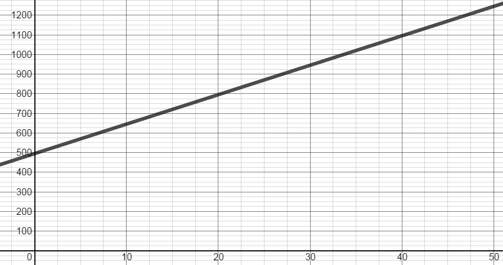
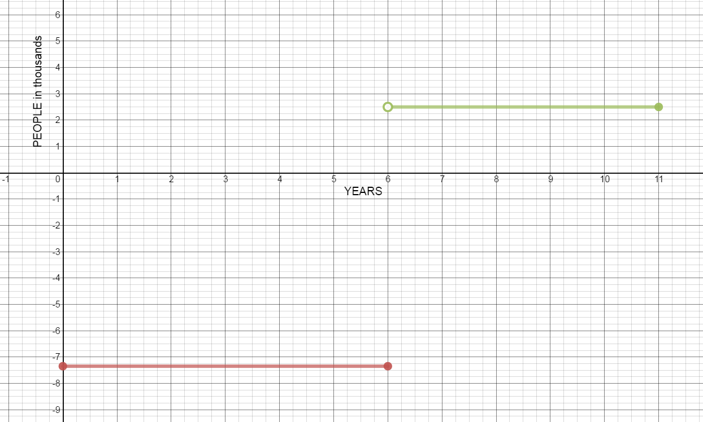

MATH 1830 Notes
Mary Monroe-Ellis
Susan Mosteller and stuff
Unit 1 Limits
1.P Writing Equations of Lines
Introduction
Some problems can be represented by linear equations which can then be used to find solutions or make predictions. In this activity you will use slopes and ordered pairs to write expressions that model these problems.
-
You need to find a formula for the number of cars produced by a new plant that was opened 25 days ago. You are told that three days ago the plant had 450 cars on hand, and that yesterday it had 480 cars on hand. You are also told that some of these cars came from previous inventory. Assume that the plant produces cars at this same rate and has produced them at this same rate since it opened.Define “x” to be the time from today and “y” to be the number of cars on hand. Therefore, an ordered pair (x, y) will represent (time from today, number of cars on hand).
- Write an ordered pair using the information about the cars on hand three days ago.
$\left( { - 3,450} \right)$
- Write a second ordered pair using the information about the cars on hand yesterday.
$\left( { - 1,480} \right)$
- You need to know the rate at which the plant is producing cars. Another name for this rate of change is “slope.” Use the two ordered pairs to find the rate of change.
$m = \frac{{{y_2} - {y_1}}}{{{x_2} - {x_1}}} = \frac{{480 - 450}}{{ - 1 - \left( { - 3} \right)}} = \frac{{30}}{2} = 15$
The plant is producing 15 cars per day
- Use the slope and one of the ordered pairs (doesn’t matter which one!) to write a linear equation describing this problem. Use point-slope form: $y-y_1=m(x-x_2).$
Using point $\left( { - 3,450} \right) \quad\ y-450=15(x--3)$
Using point $\left( { - 1,480} \right) \quad\ y-480=15(x--1)$
- Write the equation in slope-intercept form: [y = mx + b].
$y = 15x + 495$
- Now write the equation in standard form: $ax + by = c$
$15x - y = - 495$
- Use the equation to find the number of cars the plant had on hand when it opened.
Because the plant opened 25 days ago, $x=-25$
$y = 15\left( { - 25} \right) + 495 = 120$ cars
On the day the the plant opened, there were 120 cars on hand
- Use the equation to find the number of cars the plant will have on hand in five days.
Assuming in 5 days means 5 days from today.
$y = 15\left( 5 \right) + 495 = 570$ cars
5 days from today, the plant will have 570 cars on hand
- Use the equation to find when the plant will have 675 cars on hand.
$y=675$
$675 = 15x + 495$
$x = 12$
12 days from today, the plant will have 675 cars.
- Graph the equation on the interval [-3,13].
$y = 15x + 495$
x axis: time from today, in days
y axis: number of cars on hand


- Write an ordered pair using the information about the cars on hand three days ago.
Ally Bank is offering its customers a 2-year Certificate of Deposit (CD) paying 1.29% (APR) with no minimum deposit. Define x to be the amount deposited and y to be the APR.
- Write ordered pairs that would represent depositing \$100, \$1000, and \$5000 in the CD.
$\left( 100,1.29 \right)$
$\left( 1000,1.29 \right)$
$\left( 5000,1.29 \right)$
- What is the rate of change of the APR?
$m = \frac{{{y_2} - {y_1}}}{{{x_2} - {x_1}}} = \frac{{1.29 - 1.29}}{{1000 - 100}} = \frac{0}{{900}} = 0$
- Find the linear equation that represents this problem.
$y = 1.29$
- Graph the equation.


- Write ordered pairs that would represent depositing \$100, \$1000, and \$5000 in the CD.
When Apple stock was first listed on the Nasdaq Stock Exchange on December 2, 1980, the price for one share of stock was \$28.75. On June 12, 1995, the day Sam was born, his aunt gave him one share of Apple stock. On that day it was worth \$44. On January 14, 2015, one share of Apple stock was selling for \$109.01.
Define x to be the number of shares of Apple stock and y to be the value of the stock.
- Write three ordered pairs to represent the value of the stock on these 3 days.
$\left( {1,28.75} \right)$, $\left( {1,44} \right)$, $\left( {1,109.01} \right)$
- Graph these three points.


- Write the equation of the line.
$x = 1$
- What is the slope of this line?
$m = \frac{{{y_2} - {y_1}}}{{{x_2} - {x_1}}} = \frac{{44 - 28.75}}{{1 - 1}} = \frac{{15.25}}{0} = undefined$
- Is this a function? Explain.
No. There are multiple outputs for the same input.
- Write three ordered pairs to represent the value of the stock on these 3 days.
Notes
Write the equation of the vertical and horizontal lines through the point (2, 4) . Graph both lines. What is the slope of each line?


Vertical Line: $x = 2$ with undefined slope
Horizontal Line: $y = 4$ with slope = 0
For each of the sets of points below, find:
i. the slope of the line
ii. the slope intercept form of the line
iii. the standard form of the line
iv. the y intercept and the x intercept of the line
- (3, 5) and (-1, 7)
-
$m=\frac{7-5}{-1-3}=\frac{2}{-4}=$
$-\frac{1}{2}$
-
$y-5=-\frac{1}{2}(x-3)\Rightarrow y-5=-\frac{1}{2}x+\frac{3}{2}$
$y=-\frac{1}{2}x+\frac{13}{2}$
-
$y=-\frac{1}{2}x+\frac{13}{2}\Rightarrow 2y=-1x+13$
$x+2y=13$
-
y-intercept $(0,\frac{13}2)$ and x-intercept $(13,0)$
-
- (2, 7) and (2, -3)
-
$m = \frac{{7 + 3}}{{2 - 2}}=$
$undefined$
-
$x = 2$
-
$x = 2$
-
y - intercept: none and x-intercept $(2,0)$
-
- (1, 3) and (0, 3)
-
$m = \frac{{3 - 3}}{{1 - 0}} =$
$ 0$
-
$y = 3$
-
$y = 3$
-
y-intercept$(0,3)$ and x-intercept: none
-
- (-4, -8) and (-3, -4)
-
$m = \frac{{ - 8 + 4}}{{ - 4 + 3}} = \frac{{ - 4}}{{ - 1}} =$
$ 4$
-
$y+8=4(x+4) \quad\ y+8=4x+16$
$y=4x+8$
-
$y-4x=8 \quad\ -y+4x=-8$
$4x-y=-8$
-
y-intercept $(0,8)$ and x-intercept $(-2,0)$
-
- (3, 5) and (-1, 7)
You want to rent a 4”x8” U-Haul Trailer. The rental fee is \$15 for the first day and \$13.50 for each additional day. What is the equation relating the cost, y, to the number of days you rent the trailer?
$y=15+13.50x$
1.1 Limits Graphically and Algebraically
Introduction
Box Office Receipts
The total worldwide box-office receipts for a long running blockbuster movie are approximated by the function $$T(x) = \frac{{120{x^2}}}{{{x^2} + 4}}$$ where T(x) is measured in millions of dollars and x is the number of months since the movie’s release. What are the total box-office receipts after:
- The first month?
$T\left( 1 \right) = \frac{{120{{\left( 1 \right)}^2}}}{{{1^2} + 4}} = 24$
\$$24$ million
- The second?
$T\left( 2 \right) = \frac{{120{{\left( 2 \right)}^2}}}{{{2^2} + 4}} = 60$
\$$60$ million
- The third?
$T\left( 3 \right) = \frac{{120{{\left( 3 \right)}^2}}}{{{3^2} + 4}} = 83$
\$$83$ million
- The hundredth?
$T\left( {100} \right) = \frac{{120{{\left( {100} \right)}^2}}}{{{{100}^2} + 4}} = 119.95$
\$$119.95$ million
- What will the movie gross in the long run? (When x is very large.)
$\$120$ million
Driving Costs
- The first month?
A study of driving costs of 1992 model subcompact cars found that the average cost (car payments, gas, insurance, upkeep, and depreciation), measured in cents/mile, is approximated by $$C(x) = \frac{{2010}}{{{x^{2.2}}}} + 17.80$$ where x denotes the number of miles (in thousands of miles) the car is driven in a year. What is the average cost of driving a subcompact car:
- 5,000 miles per year?
$C\left( 5 \right) = \frac{{2010}}{{{5^{2.2}}}} + 17.80 = 76.10$
76.1 cents/mile
- 10,000 miles per year?
$C\left( {10} \right) = \frac{{2010}}{{{{10}^{2.2}}}} + 17.80 = 30.50$
30.5 cents/mile
- 25,000 miles per year?
$C\left( {25} \right) = \frac{{2010}}{{{{25}^{2.2}}}} + 17.80 = 19.50$
19.5 cents/mile
- 50,000 miles per year?
$C\left( {50} \right) = \frac{{2010}}{{{{50}^{2.2}}}} + 17.80 = 18.17$
18.2 cents/mile
- What happens to the average cost as the number of miles driven increases without bound?
The average cost approaches 17.8 cents per mile when the car is driven “infinite” miles in a year.
- Verify by evaluating the cost when the number of miles is 1,000,000 (or any large number)
$C\left( {1000} \right) = \frac{{2010}}{{{{1000}^{2.2}}}} + 17.80$
$\approx 17.80$
Source https://domoremath.files.wordpress.com/2013/09/limits-word-prob-with-solns.pdf
- 5,000 miles per year?
Notes
Limits: A Graphical Approach

$f(x)=-x+1\quad\ x<1$
$f(x)=3\quad\ 1\leq x\leq2$
$f(x)=-\left(x-3\right)^2+4\quad\ 2<x<4$
$f(x)=-1\quad\ x\geq4$
Use the piecewise function to answer the questions below.
Evaluate the limits graphically. If the limit does not exist, explain why.
$\mathop {\lim }\limits_{x\; \to {0^ - }} f\left( x \right) =$
$1$
$\mathop {\lim }\limits_{x\; \to {0^ + }} f\left( x \right) =$
$1$
$\mathop {\lim }\limits_{x\; \to 0} f\left( x \right) =$
$1$
$f\left( 0 \right) = $
$1$
$\mathop {\lim }\limits_{x\; \to {1^ - }} f\left( x \right) =$
$0$
$\mathop {\lim }\limits_{x\; \to {1^ + }} f\left( x \right) =$
$3$
$\mathop {\lim }\limits_{x\; \to 1} f\left( x \right)=$
Does not exist
$f\left( 1 \right) =$
$3$
$\mathop {\lim }\limits_{x\; \to {2^ - }} f\left( x \right) =$
$3$
$\mathop {\lim }\limits_{x\; \to {2^ + }} f\left( x \right) =$
$3$
$\mathop {\lim }\limits_{x\; \to 2} f\left( x \right) =$
$3$
$f\left( 2 \right) =$
undefined
Is it possible to define $f\left( 1 \right)$ so that $\mathop {\lim }\limits_{x\; \to 1} f\left( x \right) = f\left( 1 \right)$? Explain.
No. The limit does not exist. There is a jump in the graph.
Is it possible to redefine $f\left( 2 \right)$ so that $\mathop {\lim }\limits_{x\; \to 2} f\left( x \right) = f\left( 2 \right)$? Explain.
Yes. Let $f\left( 2 \right) = \;3$
$\mathop {\lim }\limits_{x\; \to - 1} f\left( x \right) =$
$2$
$\mathop {\lim }\limits_{x\; \to 4} f\left( x \right) =$
Does not exist
$\mathop {\lim }\limits_{x\; \to 2} f\left( x \right) =$
$3$
$\mathop {\lim }\limits_{x\; \to 3} f\left( x \right) =$
$4$
$\mathop {\lim }\limits_{x\; \to - 2} f\left( x \right) =$
$3$
Limits: An Algebraic Approach
Find each indicated quantity, if it exists.
$\mathop {\lim }\limits_{x \to 4} \;{x^2} - 5x + 1 =$
${4^2} - 5\left( 4 \right) + 1 =$
$- 3$
$\mathop {\lim }\limits_{x \to - 5} \;2{x^2} + 10x + 7 =$
$2{\left( { - 5} \right)^2} + 10\left( { - 5} \right) + 7 =$
$7$
$f\left( x \right) = \sqrt{x+4}$
- $\mathop {\lim }\limits_{x \to {4^ + }} {\mkern 1mu} f(x)=$
$\sqrt{-4+4}=\sqrt0$
$=0$
- $\mathop {\lim }\limits_{x \to {4^ - }} {\mkern 1mu} f(x)$
$=-4+5=$
$1$
- $\mathop {\lim }\limits_{x \to {4}} {\mkern 1mu} f(x)$
Does not exist
- $f(-4)=$
undefined
- $\mathop {\lim }\limits_{x \to {4^ + }} {\mkern 1mu} f(x)=$
$g\left( x \right) = \;\frac{{x - 2}}{{\left| {x - 2} \right|}}$
- $\mathop {\lim }\limits_{x\; \to {2^ + }} g\left( x \right) = \;$
1
- $\mathop {\lim }\limits_{x\; \to {2^ - }} g\left( x \right) = \;$
-1
- $\mathop {\lim }\limits_{x\; \to {2^{}}} g\left( x \right) = \;$
Does not exist
- $g\left( 2 \right) = $
undefined
- $\mathop {\lim }\limits_{x\; \to {2^ + }} g\left( x \right) = \;$
$f\left( x \right) = \;\frac{{3{x^2}\; + 2x - 1}}{{x{\;^2} + 3x + 2}}$
- $\underset{x\rightarrow -3}{lim}f(x)=$
$\underset{x\rightarrow -3}{lim}f(x)=\frac{3{{\left( -3 \right)}^{2}}~+2\left( -3 \right)-1}{\left( -3 \right){{~}^{2}}+3\left( -3 \right)+2}=$
$10$
- $\underset{x\rightarrow -1}{lim}f(x)=$
$\frac{3{{\left( -1 \right)}^{2}}~+2\left( -1 \right)-1}{\left( -1 \right){{~}^{2}}+3\left( -1 \right)+2}=\frac{0}{0}$
Indeterminate form. Factor, Reduce, Try Again.
$\underset{x\rightarrow -1}{lim}f(x)=\underset{x\rightarrow -1}{lim}\frac{\left( 3x-1 \right)\left( x+1 \right)}{\left( x+1 \right)\left( x+2 \right)}=\underset{x\rightarrow -1}{lim}\frac{\left( 3x-1 \right)}{\left( x+2 \right)}=$
$-4$
- $\mathop {\lim }\limits_{x\; \to \;2} f\left( x \right)$
$=\frac{5}{4}=1.25$
- $\mathop {\lim }\limits_{x\; \to \; - 2} f\left( x \right)$
$=\frac{7}{0}\,$ Does not exist
- $\underset{x\rightarrow -3}{lim}f(x)=$
$\underset{x\rightarrow 10}{lim} \frac{{{x^2}\; - 15x + 50}}{{{{\left( {x - 10} \right)}^2}}}$
$=\frac{0}{0}$
Indeterminate form. Factor, reduce, try again.
$\underset{x\rightarrow 10}{lim}\,\frac{\left( x-5 \right)\left( x-10 \right)}{{{\left( x-10 \right)}^{2}}}=\underset{x\rightarrow 10}{lim}\,\frac{\left( x-5 \right)}{\left( x-10 \right)}=\frac{5}{0}$
Limit does not exist. Vertical asymptote at x=10. On inspection of the graph, the limit as x approaches 10 from the left and the limit as x approaches 10 from the right are not equal.
Compute the following limit for the function: $\mathop {\lim }\limits_{h \to 0} \frac{{f\left( {x + h} \right) - f\left( x \right)}}{h}$ $$f\left( x \right) = {x^2}\; + 5x - 1$$
- Define $f\left( {x + h} \right)$ and $f\left( x \right)$
$f\left( x+h \right)={{\left( x+h \right)}^{2}}+5\left( x+h \right)-1$
$f\left( x+h \right)={{x}^{2}}+2xh+{{h}^{2}}+5x+5h-1$
$f\left( x \right)={{x}^{2}}+5x-1$
- Calculate $f\left( {x + h} \right) - f\left( x \right)$
$ = \left( {{x^2} + 2xh + {h^2} + 5x + 5h - 1} \right) - \left( {{x^2} + 5x - 1} \right)$
$ = 2xh + {h^2} + 5h$
- Divide by h
$\frac{{2xh + {h^2} + 5h}}{h} =$
$ 2x + h + 5$
- Evaluate the limit
$\mathop {\lim }\limits_{h \to 0} \left ( { 2x + h + 5} \right) = 2x + 0 + 5 =$
$ 2x + 5$
- Define $f\left( {x + h} \right)$ and $f\left( x \right)$
A taxi service charges \$3.00 per mile for the first 10 miles. If the trip is over 10 miles, they charge \$5.00 per mile for every mile. Write a piecewise definition of the charge G(x) for taxi fares of x miles.
Graph G(x) for $0 < x\; \le 25.$
$f(x)=3x\quad\;0<x\leq10$
$f(x)=5x\quad\;x>10$
Find:
$\underset{x\rightarrow10^-}{lim}G(x)=$
$\underset{x\rightarrow10^+}{lim}G(x)=$
$\underset{x\rightarrow10}{lim}G(x)=$
![Graph of f(x) on domain (0,25]. f(x)=3x for domain (0,10]. f(x)=5x for domain (10,25]](images/notes/u1s1p27aa.png)
$\mathop {\lim }\limits_{x \to {{10}^ - }} G\left( x \right)=30$
$\mathop {\lim }\limits_{x \to {{10}^ + }} G\left( x \right)=50$
$\mathop {\lim }\limits_{x \to {{10}^\;}} G\left( x \right)$ = Does not exist.
1.2 Infinite Limits and Asymptotes
Introduction
Discuss this graph with your group.
Write down everything you observe.
Be prepared to share with the class.

Notes
Infinite Limits, Vertical asymptotes, and Holes:
Describe the behavior of $f(x)$ at each zero of the denominator
$f\left( x \right) = \;\frac{{{x^2}\; + 3x + 2}}{{{x^2} + 5x + 4}}$

- $x = - 4$
Vertical Asymptote at x=-4
- $x = - 1$
Hole at x=-1
- $x = - 4$
How would you determine whether the graph has holes and/or vertical asymptotes if you don’t have a graph?
- With Limits:
$\mathop {\lim }\limits_{x \to - 4} \frac{{{x^2} + 3x + 2}}{{{x^2} + 5x + 4}} = \frac{6}{0}$
$\mathop {\lim }\limits_{x \to - 1} \frac{{{x^2} + 3x + 2}}{{{x^2} + 5x + 4}} = \frac{0}{0}$
$\mathop {\lim }\limits_{x \to - 1} \frac{{\left( {x + 2} \right)\left( {x + 1} \right)}}{{\left( {x + 4} \right)\left( {x + 1} \right)}} =$
$\mathop {\lim }\limits_{x \to - 1} \frac{{x + 2}}{{x + 4}} =$
$\frac{{ - 1 + 2}}{{ - 1 + 4}} =$
$\frac{1}{3}$
- Algebraically:
Approaching $x=-4$ from the left and the right:
$f( - 4.00001) = 2 \times {10^5}\quad\quad\quad\mathop {\lim }\limits_{x \to - {4^ - }} = \infty $
$f( - 3.99999) = - 2 \times {10^5}\quad\quad\quad\mathop {\lim }\limits_{x \to - {4^ + }} = - \infty $
$\mathop {\lim }\limits_{x \to - 4} $ Does Not Exist
Approaching $x=-1$ from the left and the right:
$f( - 1.00001) = .33333\quad\quad\quad\mathop {\lim }\limits_{x \to - {1^ - }} = \frac{1}{3}$
$f( - 0.99999) = .333333\quad\quad\quad\mathop {\lim }\limits_{x \to - {1^ + }} = \frac{1}{3}$
$\mathop {\lim }\limits_{x \to - 1}= \frac{1}{3}$
- With Limits:
Describe the behavior of $f(x)$ at each zero of the denominator $f\left( x \right) = \;\frac{{{x^2}\; + 10}}{{4{{\left( {x - 3} \right)}^2}}}$
Zero of the demominator at $x=3.$ The limit approaches infinity from the left and from the right.
Limits at Infinity: Polynomials and Rational Expressions
Briefly describe the behavior of the two individual functions as x approaches positive infinity?

y approaches positive infinity as x approaches positive infinity.

y approaches 0 as x approaches positive infinity.
End Behavior of Polynomials
Let $p\left( x \right) = 3{x^3}\; - 4{x^2}\; - 2x + 5,$
Find the limit of $p\left( x \right)$ as $x \to \;\infty $ and as $x \to \; - \infty $
From calculator table or graph
$\underset{x\rightarrow\infty}{lim}p(x)=\infty$
$\underset{x\rightarrow\infty}{lim}p(x)=-\infty$
Let $p\left( x \right) = - 6{x^4} + 3{x^2} + 5$ ,
Find the limit of $p\left( x \right)$ as $x \to \;\infty $ and as $x \to \; - \infty $
From calculator table or graph
$\underset{x\rightarrow\infty}{lim}p(x)=-\infty$
$\underset{x\rightarrow\infty}{lim}p(x)=-\infty$
Horizontal Asymptotes: End Behavior and Rational Expressions
Let $f\left( x \right) = \frac{{3{x^2}\; - 5x + 9}}{{2{x^2} + 7}}$ , find the limit of $f\left( x \right)$ as $x \to \;\infty $ and as $x \to \; - \infty $
From calculator table or graph
$\underset{x\rightarrow\infty}{lim}f(x)=1.5$
$\underset{x\rightarrow\infty}{lim}f(x)=1.5$
Identify the horizontal asymptotes of the following rational expression (if the horizontal asymptote exists)
$\underset{x\rightarrow\infty}{lim} \;\frac{{7{x^3}\; - {x^2}\; + 1}}{{5{x^3}\; + 6x\; - 7}} =$
$\underset{x\rightarrow\infty}{lim} \;\frac{{7{x^3}\;}}{{5{x^3}\;}} = \mathop {\lim }\limits_{x \to \infty } \;\frac{{7\;}}{{5\;}} = \frac{7}{5}$
Horizontal Asymptote at $y=\frac{7}{5}$
$\underset{x\rightarrow\infty}{lim} \;\frac{{6{x^4}\;-{x^2}\; + 1}}{{2{x^6}\;\; - 8x}} =$
$\underset{x\rightarrow\infty}{lim} \;\frac{{6{x^4}\;}}{{2{x^6}}} = \underset{x\rightarrow\infty}{lim} \;\frac{{3\;}}{{{x^2}}} = 0$
Horizontal Asymptote at $y=0$
$\underset{x\rightarrow\infty}{lim} \;\frac{{4{x^5}\;-\;9{x^3} - \;1}}{{5{x^3}\; + 3{x^2}\; - 7}} =$
$\underset{x\rightarrow\infty}{lim}\;\frac{{4{x^5}\;}}{{5{x^3}\;}} = \underset{x\rightarrow\infty}{lim} \;\frac{{4{x^2}\;}}{{5\;}} = \infty $
No Horizontal Asymptote
Vertical and Horizontal Asymptotes: A summary
Find all vertical asymptotes, horizontal asymptotes, and holes of the function, showing all your work:
$f\left( x \right) = \;\frac{{2{x^2}\;\; - \;\;32}}{{{x^2}\; + \;5x\; + \;4}}$
$f\left( x \right) = \;\frac{{2\left( {x + 4} \right)\left( {x - 4} \right)}}{{\left( {x + 4} \right)\left( {x + 1} \right)}}$
Vertical Asymptote: x=-1, Hole: x=-4, Horizontal Asymptote: y=2
$f\left( x \right)\; = \frac{{{x^2}\;\; - \;\;9}}{{{x^2}\;\; - \;\;4}}$
$f\left( x \right) = \;\frac{{\left( {x + 3} \right)\left( {x - 3} \right)}}{{\left( {x + 2} \right)\left( {x - 2} \right)}}$
Vertical Asymptote: x=2 and x=-2, Hole: none, Horizontal Asymptote: y=1
Find all vertical asymptotes, horizontal asymptotes, and holes of the function by a quick analysis:
$f\left( x \right)\; = \frac{{x\;\; + 2}}{{{x^2}\; + \;3}}$
Vertical Asymptote: none, Hole: none, Horizontal Asymptote: y=0
$f\left( x \right)\; = \frac{{{x^2}\; - 3x - \;10}}{{{x^2}\; - \;4x - 5}}$
$f(x) = \frac{{\left( {x - 5} \right)\left( {x + 2} \right)}}{{\left( {x - 5} \right)\left( {x + 1} \right)}}$
Vertical Asymptote: x=-1, Hole: x=5, Horizontal Asymptote: y=1
$f(x) = \frac{{{x^2} + 5x - 14}}{{x - 2}}$
Vertical Asymptote: none, Hole: x=2, Horizontal Asymptote: none
1.3 Continuity
Introduction
The table below shows the cost of mailing a letter that weighs x ounces.
Weight Cost 0 < x ≤ 1 49¢ 1 < x ≤ 2 70¢ 2 < x ≤ 3 91¢ 3 < x ≤ 4 112¢ 4 < x ≤ 5 133¢ - Complete the table of letters with the following weights.
Weight Cost .98 49
1.26 70
2.55 91
3.01 112
4.29 133
- Graph the function.


- Complete the table of letters with the following weights.
Given: $f(x) = \frac{{3{x^2} - 12x - 15}}{{{x^2} - 3x - 10}}$
- From looking at the given function (and NOT graphing), where would you expect to see vertical asymptote(s)?
$f(x) = \frac{{3{x^2} - 12x - 15}}{{{x^2} - 3x - 10}} = \frac{{3{x^2} - 12x - 15}}{{\left( {x - 5} \right)\left( {x + 2} \right)}}$
Expect the vertical asymptotes to be located at x value where the denominator is equal 0, and the numerator is equal some number other than zero. Maybe $x = 5$ and $x = -2$.
- Graph the function. Where are the vertical asymptote(s)?


Vertical Asymptote at x = - 2 and a hole at x = 5.
- Do you get the same answer for a & b? Why or why not?
There was a hole at $x = 5$. If you factor the numerator AND the denominator, they both contain $(x - 5)$.
- What is the horizontal asymptote(s) for this function?
$\underset{x\rightarrow\infty}{lim} \frac{{3{x^2} - 12x - 15}}{{{x^2} - 3x - 10}} = \underset{x\rightarrow\infty}{lim} \frac{{3{x^2}}}{{{x^2}}} = \underset{x\rightarrow\infty}{lim} 3 = 3$
There is a horizontal asymptote at $y = 3$.
- From looking at the given function (and NOT graphing), where would you expect to see vertical asymptote(s)?
Notes
Informal Definition: Continuity
A function is continuous over an interval if the graph over the interval can be drawn without removing the pencil from the paper.
Formal Definition: Continuity
A function, f(x), is continuous at the point $x = c$ if all three of the following requirements are met:
- $\underset{x\rightarrow\ c}{lim} f\left( x \right)$ exists
- $f\left( c \right)$ exists
- $\underset{x\rightarrow\ c}{lim} f\left( x \right) = \;\;f\left( c \right)$
Examples of Continuous and Discontinuous Functions:
![Graph of f(x)=-(1/2)(x-1)^2 + 3. Hole in graph of f(x) at x=1. With equation f(x) should be 3. Point at (1,2). Domain of graph [-1,4]](images/notes/u1s3p1a.png)
![Graph of f(x)=-(1/2)(x-1)^2 + 3. Point at (1,3) defined and all other poings in dpmain [-1,4] defined as (x, f(x0)](images/notes/u1s3p1b.png)
![Graph of f(x)=-(1/2)(x-1)^2 + 3. Hole in graph of f(x) at x=1. With equation f(x) should be 3. No other point for x=1 defined. Domain of graph [-1,4]](images/notes/u1s3p1c.png)
Active Calculus https://open.umn.edu/opentextbooks
In Groups: Use the formal definition of continuity to discuss the continuity of the function whose graph is shown below.
Continuity at $x = - 3$
Discontinuous @ $x = - 3 \quad\ \underset{x\rightarrow-3}{lim} f(x) \ne f( - 3)$
Continuity at $x = - 2$
Continuous @ $x = - 2 \quad\ $ Satisfies all 3 requirements
Continuity at $x = 1$
Discontinuous @ $x = 1 \quad\ \underset{x\rightarrow\ 1}{lim} f(x) \:\ $ DNE
Continuity at $x = 2$
Discontinuous @ $x = 2 \quad\ \underset{x\rightarrow\ 2}{lim} f(x) \ne f(2)$
Continuity at $x = 3$
Continuous @ $x = 3 \quad\ $ Satisfies all 3 requirements
Continuity at $x = 4$
Discontinuous @ $x = 4 \quad\ \underset{x\rightarrow\ 4}{lim} f(x) \:\ $ DNE
Rules for Continuity
- Constant functions $f(x) = k$ are continuous for all x
Example: $f(x) = - 2$
- Power functions $f(x) = {x^n}$, where n is a positive integer, are continuous for all x
Example: $f(x) = {x^5} $
- Polynomial Functions are continuous for all x
Example: $f(x) = 2{x^3} - 5x + 1$
- Rational Function s are continuous for all x except where the denominator = 0
Example: $f(x) = \frac{{{x^2} + 5}}{{x - 3}}$ Where numerator and denominator are polynomials
- $\sqrt[n]{{f(x)}}$ functions are continuous for all x where n is an odd positive integer > 1
Example: $\sqrt[3]{x}$
- $\sqrt[n]{{f(x)}}$ functions are continuous for all x where n is an even positive integer and f(x) is positive
Example: $\sqrt[4]{x}$
Assessing Continuity
Are the functions continuous? Use the Rules for Continuity to explain your answers..
$h\left( x \right) = 5 - 3x$
Yes, because it is a polynomial function
$n\left( x \right) = \;\frac{{x - 3}}{{{x^2}\; + \;2x - 15}}$
$n\left( x \right) = \;\frac{{x - 3}}{{(x + 5)(x - 3)}}$
No, it is discontinuous at x=- 5 and x = 3.
$f\left( x \right) = \;\sqrt {25 - {x^2}} $
Continuous for
$x: - 5 \le x \le 5$
$g\left( x \right) = \;\sqrt[3]{{{x^2} - 4}}$
Yes, continuous for all x because it is a function with an odd root.
1.4 Definition of Derivatives Key
Introduction
A decorative birthday balloon is being filled with helium. The table shows the volume of the helium in the balloon at 3 second intervals for 30 seconds.
| t(s) | V (cubic meters) |
|---|---|
| 0 | 0 |
| 3 | 4.2 |
| 6 | 33.5 |
| 9 | 113.0 |
| 12 | 267.9 |
| 15 | 523.3 |
| 18 | 904.3 |
| 21 | 1436.0 |
| 24 | 2143.6 |
| 27 | 3052.1 |
| 30 | 4186.7 |
This function can be approximated by the equation $y = 0.16{x^3} + 0.0003{x^2} - 0.007x + 0.0161$ (graphed below)

What are the dependent and independent variables for this problem? In what units is the rate of changed expressed?
The dependent variable is volume, in $cm^3.$
The independent variable is time, in seconds.
The rate of change is measured in $cm^3$ per second $({}^{c{{m}^{3}}}/{}_{\sec })$
A secant line is a line that intersects two points on a curve. Draw a secant line on the graph for each of the following. Calculate the slope of the secant line for each of the following intervals.
- 21 s to 30 s
$\left(21,1436\right)\;\left(30,4186.7\right)\;\;{m_{secant}}\approx306\;cm^3/sec$
- 21 s to 27 s
$\left(21,1436\right)\;\left(27,3052.1\right)\;\;{m_{secant}}\approx269\;cm^3/sec$
- 21 s to 24 s
$\left(21,1436\right)\;\left(24,2143.6\right)\;\;{m_{secant}}\approx236\;cm^3/sec$
- 21 s to 30 s
What does the slope of the secant line represent?
The slope of the secant represents the average rate of change in the volume helium in the balloon over the time interval.
A tangent line is a line that intersects a curve at only one point. Draw a tangent line at the point on the graph corresponding to 21 s and estimate the slope of this line.
Answers will vary. At 21 seconds, the volume of the helium balloon is increasing at a rate of approximately $208 \;cm^3/sec$
What does the slope of the tangent line represent?
The slope of the tangent line represents the instantaneous rate of change of the volume at a given time. At 21 seconds, the volume of the helium balloon is increasing at a rate of approximately $208 \;cm^3/sec$
Compare the secant slopes to the slope of the tangent line. What do you notice?
As the interval becomes smaller, the slope of the secant line gets closer in value to the slope of the tangent line.
Source http://mysite.science.uottawa.ca/iabde083/ch01.pdf
Notes
Limit Definition of the Derivative of a Function: 4 Step ProcessStep 1 Find $f\left( {x + h} \right)$
Step 2 Find $f\left( {x + h} \right) - f\left( x \right)$
Step 3 Find $\frac{{f\left( {x + h} \right) - f\left( x \right)}}{h}$
Step 4 Find $\mathop {\lim }\limits_{h \to 0} \frac{{f\left( {x + h} \right) - f\left( x \right)}}{h}$
Use the limit definition of the derivative to find $f'\left( x \right)$, given $f\left( x \right) = \;{x^2}\; - 3x - 2$
Step 1
$f(x + h) = {(x + h)^2} - 3(x + h) - 2$
$f(x + h) = {x^2} + 2xh + {h^2} - 3x - 3h - 2$
Step 2
$f(x + h) - f(x) = \left( {{x^2} + 2xh + {h^2} - 3x - 3h - 2} \right) - \left( {{x^2}\; - 3x - 2} \right)$
$f(x+h)-f(x)= 2xh + {h^2} - 3h$
Step 3
$\frac{{f(x + h) - f(x)}}{h} = \frac{{2xh + {h^2} - 3h}}{h}$
$ \frac{{f(x + h) - f(x)}}{h} = \frac{{2xh}}{h} + \frac{{{h^2}}}{h} - \frac{{3h}}{h}$
$\frac{{f(x + h) - f(x)}}{h} = 2x + h - 3$
Step 4
$\mathop {\lim }\limits_{h \to 0} 2x + h - 3 = 2x + (0) - 3 = 2x - 3$
$f'(x) = 2x - 3$
Use the limit definition of the derivative to find $f'\left( x \right)$, given $f\left( x \right) = \;5{x^2} + 2x - 8$
Step 1
$f(x + h) = 5{(x + h)^2} + 2(x + h) - 8$
$f(x+h)= 5({x^2} + 2xh + {h^2}) + 2x + 2h - 8$
$f(x+h)=5{x^2} + 10xh + 5{h^2} + 2x + 2h - 8$
Step 2
$f(x + h) - f(x) = \left( {5{x^2} + 10xh + 5{h^2} + 2x + 2h - 8} \right) - \left( {5{x^2} + 2x - 8} \right)$
$f(x+h)-f(x)= 10xh + 5{h^2} + 2h$
Step 3
$\frac{{f(x + h) - f(x)}}{h} = \frac{{10xh + 5{h^2} + 2h}}{h}$
$ \frac{{f(x + h) - f(x)}}{h} = \frac{{10xh}}{h} + \frac{{5{h^2}}}{h} + \frac{{2h}}{h}$
$\frac{{f(x + h) - f(x)}}{h} = 10x + 5h + 2$
Step 4
$\mathop {\lim }\limits_{h \to 0} 10x + 5h + 2 = 10x + 5(0) + 2 = 10x + 2$
$f'(x) = 10x + 2$
Write the equation of the tangent line at x=2.Point $\quad f(2)=16\quad \quad (2,16)$
Slope $\quad {m_{tan}} = f'(2) = 10(2) + 2 = 20 + 2 = 22$
$y-y_1=m\left(x-x_1\right)\\ $
y - 16 = 22(x - 2)
y - 16 = 22x - 44
y = 22x - 28
Use the limit definition of the derivative to find $f'\left( x \right)$, given $f(x) = - 4{x^2} + x + 2$
Step 1
$f(x+h)=-4{{(x+h)}^{2}}+(x+h)+2$
$f(x+h)=-4({{x}^{2}}+2xh+{{h}^{2}})+x+h+2$
$f(x+h)=-4{{x}^{2}}-8xh-4{{h}^{2}}+x+h+2$
Step 2
$f(x+h)-f(x)=\left( -4{{x}^{2}}-8xh-4{{h}^{2}}+x+h+2 \right)-\left( -4{{x}^{2}}+x+2 \right)$
$f(x+h)-f(x)=-8xh-4{{h}^{2}}+h$
Step 3
$\frac{f(x+h)-f(x)}{h}=\frac{-8xh-4{{h}^{2}}+h}{h}$
$\frac{f(x+h)-f(x)}{h}=\frac{-8xh}{h}-\frac{4{{h}^{2}}}{h}+\frac{h}{h}$
$\frac{f(x+h)-f(x)}{h}=-8x-4h+1$
Step 4
$\mathop {\lim }\limits_{h \to 0} -8x-4h+1=-8x-4(0)+1=-8x+1$
${f}'(x)=-8x+1$
Write the equation of the tangent line at x = 1
Point $\quad f(1)=-1\quad \quad (1, - 1)$
Slope $\quad {m_{\tan}}= f'(1) =- 8(1) + 1 = - 8 + 1 = - 7$
$y-y_1=m\left(x-x_1\right)\\ $
y +1 = -7(x - 1)
y +1 = -7x +7
y = -7x +6
Use the limit definition of the derivative to find $f'\left( x \right)$, given $f\left( x \right) = \;\frac{6}{x}\;\,\, - \,\,2$
Step 1
$f(x + h) = \frac{6}{{x + h}} - 2$
Step 2
$f(x + h) - f(x) = \frac{6}{{x + h}} - \frac{6}{x}$
$f(x + h) - f(x) = \frac6{x+h}\left(\frac xx\right)-\frac6x\left(\frac{x+h}{x+h}\right)$
$f(x + h) - f(x) = \frac{{6x}}{{x(x + h)}} - \frac{{6x + 6h}}{{x(x + h)}}$
$f(x + h) - f(x) = \frac{{ - 6h}}{{x(x + h)}}$
Step 3
$\frac{{f(x + h) - f(x)}}{h} = \frac{{\left( {\frac{{ - 6h}}{{x(x + h)}}} \right)}}{h}$
$\frac{{f(x + h) - f(x)}}{h} = \frac{-6h}{x(x+h)}\cdot\frac1h = \frac{{ - 6}}{{x(x + h)}}$
Step 4
$\mathop {\lim }\limits_{h \to 0} \frac{{ - 6}}{{x(x + h)}} = \frac{{ - 6}}{{x(x + 0)}} = \frac{{ - 6}}{{x(x)}} = \frac{{ - 6}}{{{x^2}}}$
$f'\left( x \right) = -\frac{{ 6}}{{{x^2}}}$
Find the equation of the tangent line at $x = 3$Point $\quad f(3)=0\quad (3,0)$
Slope $\quad {m_{\tan}} = f'(3) = \frac{{ - 6}}{9} = - \frac{2}{3}$
$y-y_1=m\left(x-x_1\right)\\ $
$y -0 = - \frac{2}{3}(x - 3)$
$y = - \frac{2}{3}x + 2$
Friedman Academy is a charter school in South Texas. The school is not at capacity, and enrollment increases monthly. The charter school’s enrollment is modeled by $$y = f\left( x \right) = {x^2}\; + x + 100$$ Where y is in students and x is in years since 2008.
- Estimate the average change in enrollment (the average rate of change of y with respect to x) from the year 2010 to the year 2012.
Use points $(2,106)$ and $(4,120)$
Avg change: $\frac{120-106}{4-2}=\frac{14}{2}=$
Enrollment increases by 7 students per year
- Find the function for the instantaneous rate of change in enrollment using the limit definition of the derivative.
Step 1
$f(x + h) = {(x + h)^2} + (x + h) + 100= {x^2} + 2xh + {h^2} + x + h + 100$
Step 2
$f(x + h) - f(x) =( {{x^2} + 2xh + {h^2} + x + h + 100}) - ({{x^2} + x + 100})$
$f(x + h) - f(x)= 2xh + {h^2} + h$
Step 3
$\frac{{f(x + h) - f(x)}}{h} = \frac{{2xh + {h^2} + h}}{h}$
$\frac{{f(x + h) - f(x)}}{h} = \frac{{2xh}}{h} + \frac{{{h^2}}}{h} + \frac{h}{h}$
$\frac{{f(x + h) - f(x)}}{h} = 2x + h + 1$
Step 4
$\mathop {\lim }\limits_{h \to 0}\,\left( 2x+h+1 \right)=2x+(0)+1=2x+1$
${f}'(x)=2x+1$
- Use the equation to calculate the instantaneous change in enrollment in 2010, 2011, and 2012.
$f'(2) = 2(2) + 1 = 4 + 1 = 5$
In 2010, enrollment is increasing by 5 students per year.
$f'(3) = 2(3) + 1 = 6 + 1 = 7$
In 2011, enrollment is increasing by 7 students per year.
$f'(4) = 2(4) + 1 = 8 + 1 = 9$
In 2012, enrollment is increasing by 9 students per year.
- Estimate the average change in enrollment (the average rate of change of y with respect to x) from the year 2010 to the year 2012.
Suppose an object moves along the y axis so that its location is $y=f\left( x \right)=2{{x}^{2}}~+3x$ at time x. y is in meters and x is in seconds
- Find the average velocity (the average rate of change of y with respect to x) for x changing from 2 to 4 sec.
Use the points $(2,14)$ and $(4,44)$
$avg\ rate\ of\ change=\frac{44-14}{4-2}=\frac{30}{2}=$
The average velocity from 2 to 4 seconds is $15m/s$
- The instantaneous velocity using the limit definition of the derivative to find.
Step 1
$f(x + h) = 2{(x + h)^2} + 3(x + h)$
$f(x + h)= 2({x^2} + 2xh + {h^2}) + 3x + 3h$
$f(x + h)= 2{x^2} + 4xh + 2{h^2} + 3x + 3h$
Step 2
$f(x + h) - f(x) = \left( {2{x^2} + 4xh + 2{h^2} + 3x + 3h} \right) - \left( {2{x^2} + 3x} \right)$
$f(x + h) - f(x)= 4xh + 2{h^2} + 3h$
Step 3
$\frac{{f(x + h) - f(x)}}{h} = \frac{{4xh + 2{h^2} + 3h}}{h}$
$\frac{{f(x + h) - f(x)}}{h} = \frac{{4xh}}{h} + \frac{{2{h^2}}}{h} + \frac{{3h}}{h}$
$\frac{{f(x + h) - f(x)}}{h} = 4x + 2h + 3$
Step 4
$\mathop {\lim }\limits_{h \to 0} \left( {4x + 2h + 3} \right) = 4x + 2\left( 0 \right) + 3 = 4x + 3$
$f'(x) = 4x + 3$
- The instantaneous velocity at x = 2 seconds, 3 seconds, and 4 seconds.
$f'(2) = 4(2) + 3 = 8 + 3 = $
$11\;m/s$
$f'(3) = 4(3) + 3 = 12 + 3 = $
$15\;m/s$
$f'(4) = 4(4) + 3 = 16 + 3 = $
$19\;m/s$
- Find the average velocity (the average rate of change of y with respect to x) for x changing from 2 to 4 sec.
1.5 Derivatives: The Power Rule
Notes
Basic Differentiation Properties
Three Equivalent Terms:If $y\; = \;\;f\left( x \right),\;$ you can use any of these to represent the derivative $y' = f'\left( x \right) = \frac{{dy}}{{dx}}$
THE POWER RULE: If $f\left( x \right) = {x^n}$ then $f'\left( x \right) = n{x^{n - 1}}$
Using the Power Rule Find the indicated derivative:
$g\left( x \right) = {x^4}$
$g'\left( x \right) = 4{x^3}$
$y = 2{x^3}$
$y' = 6{x^{ 2}}$
$\frac{d}{{dx}}\left( 5 \right)$
$\frac{d}{{dx}}\left( 5 \right) = \frac{d}{{dx}}\left( {5{x^0}} \right) = 5\left( 0 \right){x^{ - 1}} = 0$
$y = \;\frac{1}{{{x^7}}} = {x^{ - 7}}$
$y' = - 7{x^{ - 8}} = \frac{{ - 7}}{{{x^8}}}$
$y = \;\frac{{{x^4}}}{{16}}$
$\frac{{dy}}{{dx}} = \frac{{4{x^3}}}{{16}} = \frac{{{x^3}}}{4}$
$y\; = 8 + 3t - 5{t^3}$
$\frac{{dy}}{{dt}} = 0 + 3 - 15{t^2} = 3 - 15{t^2}$
$g\left( x \right) = 6{x^{ - 5}} - \;\;5{x^{ - 4}}$
$g'\left( x \right) = - 30{x^{ - 6}} + 20{x^{ - 5}} =$
$ \frac{{ - 30}}{{{x^6}}} + \frac{{20}}{{{x^5}}}$
$\frac{d}{{dx}}\left( {\frac{{4{x^3}}}{{10}}\; - \;\;\frac{2}{{3{x^4}}}} \right)$
$\frac{d}{{dx}}\left( {\frac{4}{{10}}{x^3} - \frac{2}{3}{x^{ - 4}}} \right)$
$\frac{d}{{dx}} = \frac{{12}}{{10}}{x^2} + \frac{8}{3}{x^{ - 5}} = $
$\frac{{6{x^2}}}{5} + \frac{8}{{3{x^5}}}$
$H'\left( w \right)$ if $H\left( w \right) = \;\frac{5}{{{w^6}}}\; - \;\;7\sqrt w$
$H(w)= 5{w^{ - 6}} - 7{w^{1/2}}$
$H'(w) = - 30{w^{ - 7}} - \frac{7}{2}{w^{ - 1/2}} =$
$ \frac{{ - 30}}{{{w^7}}} - \frac{7}{{2\sqrt w }}$
$\frac{d}{{du}}\left( {7{u^{2/3}}\;\; + \;\;\;4{u^{ - 3/5}}} \right)$
$\frac{d}{{du}} = \frac{{14}}{3}{u^{ - 1/3}} - \frac{{12}}{5}{u^{ - 8/5}}$
Find and approximate the value(s) of$\;x$ where the graph of$\;f\;$has a horizontal tangent line. Use a graphing calculator to verify. $f\left( x \right) = 2{x^2}\; - 5x$
$f'(x) = 4x - 5$
The graph of f has a horizontal tangent where $f'(x) = 0$
$4x - 5 = 0$
$4x = 5$
$x = \frac{5}{4}$
A company’s total sales (in millions of dollars) t months from now are given by $S\left( t \right) = 0.032{t^4}\;\; + 0.5{t^3}\; + 2.8{t^2}\; + 9t - 4$
- Find $S'\left( t \right)$
$S'\left( t \right) = 0.128{t^3} + 1.5{t^2} + 5.6t + 9$
- Find $S\left( 4 \right)$ and $S'\left( 4 \right)$ Write a brief verbal interpretation of these results.
$S(4) = 0.032{(4)^4} + 0.5{(4)^3} + 2.8{(4)^2} + 9(4) - 4 = 116.99$
$S'(4) = 0.128{(4)^3} + 1.5{(4)^2} + 5.6(4) + 9 = 63.59$
Total sales after 4 months are \$116.99 million. The sales are increasing at a rate of $63.59 million per month.
- Find $S\left( 8 \right)$ and $S'\left( 8 \right)$ Write a brief verbal interpretation of these results.
$S(8) = 0.032{(8)^4} + 0.5{(8)^3} + 2.8{(8)^2} + 9(8) - 4 = 634.27$
$S'(8) = 0.128{(8)^3} + 1.5{(8)^2} + 5.6(8) + 9 = 215.34$
Total sales after 8 months are \$634.27 million. The sales are increasing at a rate of $215.34 million per month.
- Find $S'\left( t \right)$
A company decides to develop a cost equation based on the quantity of the product produced in a day. They collected the following data:
Quantity 20 35 50 65 80 95 110 Cost 642.35 766.48 858.82 928.83 1005.32 1078.82 1140.79 - Enter the data in a graphing calculator and find a cubic regression equation for the data.
Let $x$ represent the quantity produced in a day.
Let $y$ represent the daily cost for production.
$F(x) = y = 0.000326{x^3} - 0.084298{x^2} + 11.710778x + 441.4657$
- If $y\; = \;F\left( x \right)$ denotes the regression equation found in part A, find $F\left( {70} \right)$ and $F'\left( {70} \right)$
$F'(x) = 0.0009777{x^2} - 0.168596x + 11.71$
$F(70) = 959.9$
$F'(70) = 4.699$
- Write a brief verbal interpretation of these results
The total cost to produce 70 items is \$959.90. The cost is increasing by $4.70 for the next item.
- Enter the data in a graphing calculator and find a cubic regression equation for the data.
1.6 Marginal Analysis in Business and Economics
Introduction
The cost, in dollars, of producing $x$ frozen fruit yogurt bars per day can be modeled by the function $$C(x) = 3450 + 1.5x - 0.0001{x^2}\quad when\quad 0 \le \,\,x\, \le 5000.$$
The revenue from selling $x$ yogurt bars is
$$R(x) = 3.25x.$$Cost, Revenue, & Profit
What does 3450 represent in the cost function?
3450 is the initial cost (machine, etc) and any static daily costs. This is the cost to the company even if zero bars are produced.
What does 3.25 represent in the revenue function?
3.25 represents the revenue earned per yogurt bar: \$$3.25$ per bar.
What is the cost of producing 0 yogurt bars? What is the revenue generated from selling this many bars? What is the profit for selling 0 bars?
$C\left( 0 \right) = 3450$
The cost for producing 0 bars is \$3450, the initial cost.
$R\left( 0 \right) = 0$
When 0 bars are produced, the revenue is $0.
$P\left( x \right) = R\left( x \right) - C\left( x \right)$
$P\left( 0 \right) = 0 - 3450 = - 3450$
Profit is -\$3450 if no yogurt bars are made and sold.
What is the cost of producing 1000 yogurt bars? What is the revenue generated from selling this many bars? What is the profit for selling 1000 bars?
$C\left( {1000} \right) = 4850$
The cost for producing 1000 bars is $4850.
$R\left( {1000} \right) = 3250$
The revenue for producing and selling 1000 bars is $3250.
$P\left( {1000} \right) = 3250 - 4850 = - 1600$
Profit is - \$1600 if 1000 yogurt bars are made and sold.
What is the cost of producing 5000 yogurt bars? What is the revenue generated from selling this many bars? What is the profit for selling 5000 bars?
$C\left( {5000} \right) = 8450$
The cost for producing 5000 bars is $8450.
$R\left( {5000} \right) = 16250$
The revenue for producing and selling 5000 bars is $16,250.
$P\left( {5000} \right) = 16250 - 8450 = 7800$
Profit is $7800 if 5000 yogurt bars are made and sold.
Find the model for the profit function, $P\left( x \right)$.
$P\left( x \right) = R\left( x \right) - C\left( x \right) = \left( {3.25x} \right) - \left( {3450 + 1.5x - 0.0001{x^2}} \right) =$
$P(x)= 0.0001{x^2} + 1.75x - 3450$

Answer the following questions about the model:
When is the profit function positive?
When production is greater than 1780 yogurt bars.
When is it negative?
When production is less than 1780 yogurt bars.
What important information does this provide the business owner?
The owner needs to produce and sell at least 1780 bars to break even and/or to make a profit.
Average Cost, Revenue, & Profit
It is clear from 3, 4, & 5 that the cost, revenue, and profit change based on the number of yogurt bars produced/sold. How would you determine the AVERAGE cost, revenue, and profit?
Use these equations generated earlier:
$C(x) = 3450 + 1.5x - 0.0001{x^2}\quad when\quad 0 \le \,\,x\, \le 5000$
$R(x) = 3.25x$
$P(x) = 0.0001{x^2} + 1.75x - 3450$
-
$\bar C\left( x \right)\, = \frac{{C\left( x \right)}}{x} = \frac{{3450 + 1.5x - 0.0001x}}{x}$
$ = \bar C=\frac{{3450}}{x} + 1.5 - 0.0001x$
-
$\bar R\left( x \right)\, = \frac{{R\left( x \right)}}{x} = \frac{{3.25x}}{x} = $
$\bar R=3.25$
-
$\bar P\left( x \right)\, = \frac{{P\left( x \right)}}{x} = \frac{{0.0001{x^2} + 1.75x - 3450}}{x} =$
$\bar P= 0.0001x + 1.75 - \frac{{3450}}{x}$
-
. Find the average cost and explain the result:
-
$\bar C(0)\, =$
undefined (Can't divide by zero)
- $\bar C(1000)\, =$
$4.85$
At a production level of 1000 bars, the average cost to produce one bar is $4.85
- $\bar C(5000)\,$ =
$1.69$
At a production level of 5000 bars, the average cost to produce one bar is $1.69
-
Is there a difference in the average cost when the number of bars produced changes? Why or why not?
Yes. Average cost decreases as the production level increases. The initial costs are divided by a larger number thus decreasing the amount per bar.
Marginal Cost, Revenue, & Profit
Use these equations generated earlier:
$C(x) = 3450 + 1.5x - 0.0001{x^2}\quad when\quad 0 \le \,\,x\, \le 5000$
$R(x) = 3.25x$
$P(x) = 0.0001{x^2} + 1.75x - 3450$
Determine $C'\left( x \right)$. What does this represent?
$C'\left( x \right) = 1.5 - 0.0002x$
$C'\left( x \right)$ represents the estimated cost to produce one more bar, at a production level of x bars.
Determine $C'\left( {1000} \right)$. Interpret this result.
$C'\left( {1000} \right) = 1.5 - 0.0002\left( {1000} \right) = 1.3$
At a production rate of 1000 bars, the cost to produce the 1001th bar is estimated to be \$1.30
When is $C'\left( x \right) = 0$? Explain your answer.
$1.5 - 0.0002x = 0$
$1.5 = 0.0002x$
$7500 = x$
$C'\left( x \right)$ will never equal 0. 7500 yogurt bars is outside the domain of the function.
Determine $R'\left( x \right)$. What does this represent?
$R'\left( x \right) = 3.25$
$R'\left( x \right)$ represents the estimated revenue to produce one more bar, at a production level of x bars.
$R'\left( x \right)$ is a constant function, therefore the revenue for one more bar will be $3.25 at any level of production.
Determine $P'\left( x \right)$. What does this represent?
$P'\left( x \right) = 0.0001x + 1.75$
$P'\left( x \right)$ represents the estimated profit that will be earned if the company produces one more bar, at a production level of x bars.
How do marginal cost, revenue, & profit relate to our discussions about average rate of change and instantaneous rate of change?
These marginal functions calculate the instantaneous rate of change at any production level.
Marginal Average Cost, Revenue, & Profit
Use these equations generated earlier:
$C(x) = 3450 + 1.5x - 0.0001{x^2}\quad when\quad 0 \le \,\,x\, \le 5000$
$R(x) = 3.25x$
$P(x) = 0.0001{x^2} + 1.75x - 3450$
Determine mathematical model for the marginal average cost.
$\bar C\left( x \right)\, = \frac{{3450}}{x} + 1.5 - 0.0001x$
$\bar C'\left( x \right)\, = - \frac{{3450}}{{{x^2}}} - 0.0001$
Find the average cost when 100 bars are produced and the marginal average cost when 100 bars are produced. Interpret these quantities.
Average Cost:
$\bar C\left( {100} \right)\, = \frac{{3450}}{{100}} + 1.5 - 0.0001\left( {100} \right) = 35.99$
At a production level of 100 bars, the average cost to produce each bar is $35.99. This number is very high, and agrees with our previous calculation that the company does not start making a profit until the production level reaches 1780 bars.
Marginal Average Cost:
$\bar C'\left( {100} \right)\, = - \frac{{3450}}{{{{\left( {100} \right)}^2}}} - 0.0001 = - .3451$
At a production level of 100 bars, the marginal average cost to produce one extra bar is -$0.35. At this level of production, the average cost will decrease by approximately 35 cents per bar if an additional bar is produced each day.
Based on your answers from the question above, estimate the average cost per bar at a production level of 101 bars per day.
Average cost per bar at a production level of 101 would be the average cost at 100 plus the marginal average cost at 100.
$\bar C\left( {101} \right)\, = \bar C\left( {100} \right) + \bar C'\left( {100} \right) = 35.99\, - .3451 = 35.6449 \approx 35.64$
At a production rate of 100 bars per day, the average cost per bar to produce 101 bars would be approximately $35.64 per bar.
Notes
Cost and Marginal Cost
A small company manufactures bicycle helmets. The total weekly cost (in dollars) of producing x helmets is given by:
$$C(x) = 9870 + 85x - 0.05{x^2}$$
- Find the Marginal Cost Function:
$C'\left( x \right) = 85 - 0.1x$
- Using the Marginal Cost Function: Find the marginal cost at a production level of 550 helmets per week. Interpret the results.
$C'\left( {550} \right) = 85 - 0.1(550) = 30$
The estimated cost for the 551st helmet is \$30.
- Using the Cost Function: Find the exact cost of producing the 551st item.
$C\left( {551} \right) = 9870 + 85\left( {551} \right) - 0.05{\left( {551} \right)^2} = 41,524.95$
$C\left( {550} \right) = 9870 + 85\left( {550} \right) - 0.05{\left( {550} \right)^2} = 41,495$
$41,4524.95 - 41,495 = 29.95$
The actual cost for the 551st helmet is $29.95
Marginal Cost, Revenue and Profit
- Find the Marginal Cost Function:
A company’s market research department recommends the manufacture and marketing of a new 3 meter lightening to USB power cord. After suitable test marketing, the research department presents the following price demand equation: $$p = 12 - 0.001x$$ where x is demand at price p. The financial department provides the cost function that includes a fixed cost of \$5600 (tooling and overhead) and variable costs of \$1.80 per power cord (materials, labor, marketing, transportation, storage): $$C\left( x \right) = 5600 + 1.80x$$
- Marginal Cost Function: Find and interpret the Marginal Cost Function
$C'(x) = 1.80$
At any production level, the cost to produce one more power cord is \$1.80.
- Revenue Function: Find the Revenue Function as a function of x.
Revenue is price multiplied by production level
$R(x) = px = \left( {12 - 0.001x} \right)x = $
$R(x)=12x - 0.001{x^2}$
- Marginal Revenue Function: Find the Marginal Revenue function and find the marginal revenue at x = 2000, x = 5000, and x = 7000. Interpret the results.
$R'\left( x \right) = 12 - 0.002x$
$R'\left( {2000} \right) = 12 - 0.002\left( {2000} \right) = 8$
Revenue increases by \$8 for the 2001st cord produced and sold.
$R'\left( {5000} \right) = 2$
Revenue increases by \$2 for the 5001st cord produced and sold.
$R'\left( {7000} \right) = - 2$
Revenue decreases by \$2 for the 7001st cord produced and sold.
- Cost and Revenue Functions: Graph the cost function and the revenue function in the same coordinate system. Find the intersection points of these two graphs and interpret the results.

At any production level between 0 and 582 power cords, revenue is less than cost. Therefore profit is negative.
At any production level between 582 and 9618 power cords, revenue is greater than cost. Therefore profit is positive.
At any production level great than 9618 power cords, revenue is less than cost. Therefore profit is negative.
- Profit Function: Find the profit function. Sketch the graph.

$P(x) = R(x) - C(x) = (12x - 0.001{x^2}) - (5600 + 1.8x) = $
$P(x)- 0.001{x^2} + 10.2x - 5600$
- Marginal Profit Function: Find the marginal profit function and evaluate the marginal profit at x = 1000, x = 4000, and x = 6000. Interpret the results.
$P'\left( x \right) = - 0.002x + 10.2$
$P'(1000) = - 0.002(1000) + 10.2 = 8.2$
Profit increases by \$8.20 for the 1001st cord.
$P'(4000) = - 0.002(4000) + 10.2 = 2.2$
Profit increases by \$2.20 for 4001st cord.
$P'(6000) = - 0.002(6000) + 10.2 = - 1.8$
Profit decreases by \$1.80 for 6001st cord.
- Marginal Cost Function: Find and interpret the Marginal Cost Function
A shop manufactures performance bikes. The manager estimates that the total cost (in dollars) of producing b bikes is: $$C\left( x \right) = 1200 + 25b - 0.14{b^2}$$
- Average Cost: Find the average cost function, $\bar C\left( x \right)$. Calculate $\bar C\left( 7 \right)$ and interpret the results.
$\bar C\left( x \right)\, = \frac{{1200 + 25x - 0.14{x^2}}}{x} = \frac{{1200}}{x} + 25 - 0.14x$
$\bar C\left( 7 \right)\, = \frac{{1200}}{7} + 25 - 0.14(7) = 195.45$
The average cost of producing 7 bikes is \$195.45.
- Marginal Average Cost: Find the Marginal Average Cost Function,$\bar C'\left( x \right)$. Calculate $\bar {C'} \left( 7 \right)$ and interpret the results.
$\bar C\left( x \right)\, = 1200{x^{ - 1}} + 25 - 0.14x$
${\bar C ^\prime }\left( x \right) = - 1200{x^{ - 2}} - 0.14$
${\bar C ^\prime }\left( 7 \right) = - 24.63$
When the 8th bike is produced, the average cost per bike decreases by \$24.63.
- Application: Use the results above to estimate the average cost per bicycle at a production level of 8 bikes.
\$195.45-\$24.63=$170.82
The estimated average cost per bicycle at a production level of 8 bikes is $170.82.
- Average Cost: Find the average cost function, $\bar C\left( x \right)$. Calculate $\bar C\left( 7 \right)$ and interpret the results.
Unit 2 Derivatives
2.P Review of Exponential and Logarithmic Functions
Notes
Three Rules for Logarithms
- Product Rule: $\ln \left( x*y \right)=\ln \left( x \right)+\text{ln}\left( y \right)$
- Example: $\ln \left( 3*5 \right)=\ln \left( 3 \right)+\text{ln}\left( 5 \right)$
- Quotient Rule: $\ln \left( x/y \right)=\ln \left( x \right)-\text{ln}\left( y \right)$
- Example: $\ln \left( 3/7 \right)=\ln \left( 3 \right)-\text{ln}\left( 7 \right)$
- Power Rule: $\ln {{x}^{y}}~=y\ln x$
- Example: $\ln {{2}^{8}}~=8\ln 2$
Three Specific Logarithms to Remember
- When x<0
- $ln(x)$ is undefined
- ${{\log }_{b}}(x)$ is undefined
- WHY?
- When x=0
- $ln(x)$ is undefined
- ${{\log }_{b}}(x)$ is undefined
- WHY?
- When x=1
- $ln(x)=0$
- ${{\log }_{b}}(x)=0$
- WHY?
Logarithm and Exponential Forms
Rewrite ${5^3} = 125$ in logarithm notation
${\log _5}125 = 3$
Rewrite ${\log _2}32 = 5$ in exponential notation
${2^5} = 32$
Rewrite $\log 10000 = 4$ in exponential notation
${10^4} = 10,000$
Rewrite $\ln 148.413159 \approx 5$ in exponential notation
${e^5} = 148.413159$
Rewrite ${e^2} \approx 7.389$ in logarithm notation
$\ln (7.389) = 2$
Review: Solve the variable to 2 decimal places
$A = 4000{e^{0.06\left( 8 \right)}}$
$A = 6464.30$
$34000 = P{e^{0.076\left( 5 \right)}}$
$\frac{{3400}}{{{e^{0.076(5)}}}} = P$
$P = 23,251.29$
$9500 = 1200{e^{0.041t}}$
$\frac{{9500}}{{1200}} = {e^{0.041t}}$
$\frac{{95}}{{12}} = {e^{0.041t}}$
$\ln \frac{{95}}{{12}} = \ln {e^{0.041t}}$
$\ln \frac{{95}}{{12}} = 0.041t$
$\left( {\ln \frac{{95}}{{12}}} \right)/0.041 = t$
$50.46 = t$
$4930 = 2250{e^{2.65r}}$
$\frac{{4930}}{{2250}} = {e^{2.65r}}$
$\frac{{493}}{{225}} = {e^{2.65r}}$
$\ln \frac{{493}}{{225}} = \ln {e^{2.65r}}$
$\ln \frac{{493}}{{225}} = 2.65r$
$\left( {\ln \frac{{493}}{{225}}} \right)/2.65 = r$
$.30 = r$
$3 = \;{e^{0.07t}}$
$\ln 3 = \ln {e^{0.07t}}$
$\ln 3 = 0.07t$
$\frac{{\ln 3}}{{0.07}} = t$
$15.69 = t$
Review: Solve for the variable without using a calculator.
$y = \;\ln {e^5}$
$y = 5$
${\log _5}x = \; - 3$
${5^{ - 3}} = x$
$\frac{1}{{{5^3}}} = x$
$\frac{1}{{125}} = x$
$\log_b5=\frac13$
$b^\frac13=5$
$\left(b^\frac13\right)^3=5^3$
$b = 125$
$s = \;{\rm{ln}}\left( e \right)$
$s = 1$
$y = \;\ln \left( {\ln e} \right)$
$y = \ln (1)$
$y = 0$
Use the Properties of Logarithms to Completely Expand the Term
$f(x) = \ln \left( {x{y^2}} \right)$
$f(x) = \ln x + \ln {y^2}$
$f(x) = \ln x + 2\ln y$
$g(x) = {\log _5}\left( {\frac{{25{x^3}}}{{4{y^7}}}} \right)$
$g(x) = {\log _5}(25{x^3}) - {\log _5}(4{y^7})$
$g(x)= {\log _5}25 + {\log _5}{x^3} - {\log _5}4 - {\log _5}{y^7}$
$g(x)= 2 + 3{\log _5}x - {\log _5}4 - 7{\log _5}y$
$h(x) = 5 + 7\ln \left( {\frac{2}{x}} \right)$
$h(x) = 5 + 7(\ln 2 - \ln x)$
$h(x)= 5 + 7\ln 2 - 7\ln x$
$f(x) = x - \ln \left( {ex} \right)$
$f(x) = x - (\ln e + \ln x)$
$f(x)= x - \ln e - \ln x$
$f(x)= x - 1 - \ln x$
Solve for x. Check for Extraneous Solutions.
${\log _2}\left( { - 8 + 4x} \right) = 4$
${2^4} = - 8 + 4x$
$16 = - 8 + 4x$
$24 = 4x$
$6 = x$
$\log \left( {{x^2} + 75} \right) = 2$
${10^2} = {x^2} + 75$
$100 = {x^2} + 75$
$25 = {x^2}$
$\pm 5=x$
$\ln \left( {{x^2} - 35} \right) = \ln \left( {2x} \right)$
${x^2} - 35 = 2x$
${x^2} - 2x - 35 = 0$
$(x - 7)(x + 5) = 0$
$x = 7\quad \quad x = - 5$ extraneous root
${\rm{x = 7}}$ is the only solution
2.1 Exponential and Logarithmic Function Applications
Introduction
Exponential functions occur frequently in science and business but are commonly used in compound interest applications.
- The value of a $1000 investment returning 8% interest compounded monthly after 12 years would be calculated using the formula , where A is the final amount in the account, P is the principal, r is the interest rate, n is the number of compounding periods per year, and t is the number of years.
- The compounding frequency has a significant impact on the final amount of money (either saved or owed).

Our focus will be on continuous compounding:
- What is e?
- Irrational number (similar to $\pi $ )
- 2.718281828459…..
- Like $\pi $, e occurs frequently in natural phenomena
- Growth of bacterial cultures
- Decay of a radioactive substance
- Formal definition of e: $$e=~\underset{n\to \infty }{\mathop{\lim }}\,{{\left( 1+\frac{1}{n} \right)}^{n}}$$ $$\approx ~~2.718281829$$
Notes
Continuous Compounding Formula (appreciation and depreciation): $$A = P{e^{rt}}$$
CONTINUOUS COMPOUND INTEREST: Round all answers to two decimal places.
Hometown Bank offers a CD that earns 1.58% compounded continuously. If \$10,000 is invested in this CD, how much will it be worth in 3 years?
$A = 10,000{e^{.0158(3)}}$
$A = \$ 10,485.41$
The account will be worth approximately \$$10,485.41$ in three years.
Hometown Bank offers a CD that earns 1.58% compounded continuously. If \$10,000 is invested in this CD, how long will it take the account to be worth $11,000?
$11,000 = 10,000{e^{.0158t}}$
$\frac{{11,000}}{{10,000}} = \frac{{10,000{e^{.0158t}}}}{{10,000}}$
$\frac{{11}}{{10}} = {e^{.0158t}}$
$\ln \frac{{11}}{{10}} = \ln {e^{.0158t}}$
$\ln = \frac{{11}}{{10}} = .0158t$
$\frac{{\ln \frac{{11}}{{10}}}}{{.0158}} = \frac{{.0158t}}{{.0158}}$
$6.03 = t$
It will take 6.03 years for the account to be worth \$ 11,000.
Doubling Time: How long will it take money to double, if it is invested at 5% compounded continuously?
$A = P{e^{rt}}$
$2 = 1{e^{.05t}}$
$2 = {e^{0.05t}}$
$\ln 2 = \ln {e^{0.05t}}$
$\ln 2 = 0.05t$
$\frac{{\ln 2}}{{0.05}} = t$
$t = 13.86$
It will take approximately 13.86 years for the initial investment to double
Doubling Rate: At what nominal rate compounded continuously must money be invested to double in 8 years?
$A = P{e^{rt}}$
$2 = 1{e^{r(8)}}$
$2 = {e^{8r}}$
$\ln 2 = \ln {e^{8r}}$
$\ln 2 = 8r$
$\frac{{\ln 2}}{8} = r$
$.0866 = r$
In order for the initial investment to double in 8 years, the money must be invested in an account with a nominal rate of 8.7% compounded continuously.
How long will it take money to triple, if it is invested at 10.5% compounded continuously?
$A = P{e^{rt}}$
$3 = 1{e^{.105t}}$
$\ln 3 = \ln {e^{.105t}}$
$\ln 3 = .105t$
$\frac{{\ln 3}}{{.105}} = t$
$10.46=t$
It will take approximately 10.46 years for the initial investment to triple.
Radioactive Decay: A mathematical model for the decay of radioactive substances is given by $$Q = {Q_0}\;{e^{rt}}.$$ The continuous compound rate of decay of carbon-14 per year is r = -0.0001238. How long will it take a certain amount of carbon-14 to decay to half the original amount?
$\frac{1}{2} = 1{e^{ - 0.0001238t}}$
$\ln .5 = \ln {e^{ - 0.0001238t}}$
$\ln .5 = - 0.0001238t$
$\frac{{\ln .5}}{{ - 0.000128}} = t$
$t = 5598.93$
It will take approximately $5598.93$ years for the carbon-14 to decay to half the original amount.
The estimated resale value R (in dollars) of a company car after t years is given by: $$R(t) = 20000{(0.86)^t}.$$ What will be the resale value of the car after 2 years? How long will it take the car to depreciate to half the original value?
$R(2) = 20,000{(0.86)^2} = \$ 14,792$
$\frac{{10,000}}{{20,000}} = \frac{{20,000{{(0.86)}^t}}}{{20,000}}$
$.5 = {0.86^t}$
$\ln .5 = \ln {0.86^t}$
$\ln .5 = t\ln 0.86$
$\frac{{\ln .5}}{{\ln 0.86}} = \frac{{t\ln 0.86}}{{\ln 0.86}}$
$\frac{{\ln .5}}{{\ln 0.86}} = t$
$t = 4.5957$
It will take approximately 4.6 years for the car to depreciate to half its original value.
2.2 Derivatives of Exponential and Logarithmic Functions
Introduction

| x | f(x)=e^x |
|---|---|
| 0 | 1 |
| 1 | 2.7183 |
| 2 | 7.3891 |
| 3 | 20.086 |
| 4 | 54.598 |
| 5 | 148.41 |
| 6 | 403.43 |
Calculate the slope of the secant line for each of the following intervals for the function $f(x) = {e^x}$.
- [1, 3]
$\frac{{{e^{3}} - {e^1}}}{{3 - 1}} =$
$8.68$
- [1, 2]
$\frac{{{e^{2}} - {e^1}}}{{2 - 1}} =$
$ 4.67$
- [1, 1.5]
$\frac{{{e^{1.5}} - {e^1}}}{{1.5 - 1}} = $
$3.53$
- [1, 3]
What does the slope of the secant line represent?
The slope of the secant line represents the average rate of change.
Draw a tangent line at the point on the graph corresponding to x = 1 and calculate the slope.
(1, 1.00001)
$\frac{{{e^{1.00001}} - {e^1}}}{{1.00001 - 1}} =$
$ 2.7182$
What does the slope of the tangent line represent?
The slope of the tangent line represents instantaneous rate of change.
Compare the values of $f(1)$and$f'(1)$. What do you notice?
$f(1) = {e^1} = 2.71828$
$f'(1) = 2.71828$
$f(x) = {e^x}$
$f'(x) = {e^x}$
The function and the derivative are the same.
Derivative of$\;f\left( x \right) = lnx$
Definition of the derivative: $\underset{h\rightarrow0}{lim}\frac{f(x+h)-f(x)}h$
Try to find the derivative of $f\left( x \right) = lnx$ using the definition of the derivative.
$\underset{h\rightarrow0}{lim}\frac{ln(x+h)-ln(x)}h$
Complete the table below to try to find the derivative of $f\left( x \right) = lnx$.
(Use your calculator and let h=0.00001 to represent h→0)
$$x$$ $$\frac{\ln \left( x+h \right)-lnx}{h}$$ $$\underset{h\to 0}{\mathop{\lim }}\,\frac{\ln \left( x+h \right)-lnx}{h}$$ 1 $$\frac{\ln \left( 1+0.00001 \right)-ln1}{0.00001}$$ 1 2 .5
3 .33
4 .25
5 .2
Based on your results what do you think the rule for the derivative of $f\left( x \right) = lnx$ is?
$f(x) = \ln x$
$f'(x) = \frac{1}{x}$
Notes
Derivatives
Find $f'\left( x \right)$ when $f(x) = 3{x^3} + 4{x^2} - 5x + 8$
$f'(x) = 9{x^2} + 8x - 5$
Find $f'\left( x \right)$ when $f\left( x \right)\; = \;\;4\ln x\; - {x^3}\;\; + 2x$
$f'(x) = \frac{4}{x} - 3{x^2} + 2$
Find $f'\left( x \right)$ when $f\left( x \right)\; = \;\;\ln x + 5{e^x}\; - 7{x^2}$
$f'(x) = \frac{1}{x} + 5{e^x} - 14x$
Find $f'\left( x \right)$ when $f\left( x \right)\; = \;\;\ln {x^8}\; - 4\ln x\;$
$f'(x) = \frac{8}{x} - \frac{4}{x}$
$f'(x) = \frac{4}{x}$
Properties of Logarithms:
Use appropriate properties of logarithms to expand $f\left( x \right)$ and then find $f'(x)$.
$f\left( x \right) = 9 + 5\;\ln \frac{1}{x}$
$9 + 5(\ln 1 - \ln x)$
$9 + 5\ln 1 - 5\ln x$
$f'(x) = 0 + 0 - \frac{5}{x}$
$f'(x) = - \frac{5}{x}$
$f\left( x \right) = x - 2\;\ln 5x$
$f(x) = x - 2(\ln 5 + \ln x)$
$f(x) = x - 2\ln 5 - 2\ln x$
$f'(x) = 1 - 0 - \frac{2}{x}$
$f'(x) = 1 - \frac{2}{x}$
Tangent Lines:
Find the equation of the line tangent to the graph of $f$ at the indicated value of x.
$f\left( x \right) = {e^x}\; + 2$ at $x = 0$
Point $\quad f(0) = {e^0} + 2 = 1 + 2 = 3$
$(0,3)$
$f'(x) = {e^x}$
Slope $\quad {m_{tan}}=f'(0) = {e^0} = 1$
${m_{tan}}=1$
$y - 3 = 1(x - 0)$
$y - 3 = 1x - 0$
$y = 1x + 3$
$y = x + 3$
$f\left( x \right) = 1\; + \ln {x^6}$ at $x = e$
Point $\quad f(e) = 1 + 6\ln e = = 1 + 6(1) = 7$
$(e,7)$
$f(x) = 1 + 6\ln x$
$f'(x) = 0 + \frac{6}{x}$
Slope $\quad {m_{tan}}=f'(e) = \frac{6}{e}$
${m_{tan}}= \frac{6}{e}$
$y - 7 = \frac{6}{e}(x - e)$
$y - 7 = \frac{6}{e}x - 6$
$y = \frac{6}{e}x + 1$
Applications:
The estimated resale value R (in dollars) of a company car after t years is given by $$R\left( t \right) = 24000{\left( {0.84} \right)^t}$$ What is the instantaneous rate of depreciation (in dollars per year) after: 1 year? 2 years? 3 years?
$R'(t) = 24,000{\left( {.84} \right)^t}\;(\ln .84)$
$R'(1) = 24,000{\left( {.84} \right)^1}\;(\ln .84) = - \$3514.96/yr$
The instantaneous rate of depreciation after 1 year is \$3514.96 per year.
$R'(2) = 24,000{\left( {.84} \right)^2}(\ln .84) = - \$2952.57/yr$
The instantaneous rate of depreciation after 2 years is \$2952.57 per year.
$R'(3) = 24,000{\left( {.84} \right)^3}(\ln .84) = - \$2480.16/yr$
The instantaneous rate of depreciation after 3 years is \$2480.16 per year.
2.3 Derivatives of Products and Quotients
Introduction
The manager of a miniature golf course is planning to raise the ticket price per game. At the current price of \$6.50, an average of 81 rounds is played each day. The manager’s research suggests that for every \$0.50 increase in price, an average of four fewer games will be played each day. Based on this information, find the function the represents revenue from rounds of mini golf, where n represents the number of \$0.50 increases in price.
$R(n) =$ (price)(number sold)
$R(n) = (6.50 + .50n)(81 - 4n)$
- What must you do with this revenue function in order to find the rate of change?
Multiply it out and use the power rule to find the derivative.
- Find the rate of change for this revenue function when the manager increases the price of a round of mini golf by \$1.50.
$R(n) = 526.50 + 14.5n - 2{n^2}$
$R'(n) = 14.5 - 4n$
If the price is increased by \$$1.5$, then $n=3$.
$R'(3) = 2.5$
When the manager increases the price per ticket by \$$1.50$, the number of rounds played each day decreases but the actual revenue increases by \$$2.50$ per day. This provides the owner with an increase in revenue even though there is a decrease in the number of rounds played each day.
- What must you do with this revenue function in order to find the rate of change?
Find the rate of change for the function $y = ({x^2} + 1)({x^2} - 2x + 1)$
This problem can be worked the same way but it is much harder to multiply out. We need an easier way to find the derivative when we have polynomial terms multiplied together.
The cost of manufacturing x MP3 players per day is represented by the function $$C(x) = 0.01{x^2} + 42x + 300\quad 0 \le x \le 300.$$
- Determine the average cost function.
$\bar C(x) = \frac{{0.01{x^2} + 42x + 300}}{x}$
- Determine the marginal average cost function. What did you have to do to the average cost function in order to find the marginal average cost function?
Must rewrite the function to use the power rule.
$\bar C(x) = 0.01x + 42 + \frac{{300}}{x}$
$\bar C(x) = 0.01x + 42 + 300{x^{ - 1}}$
$\bar C'(x) = 0.01 - 300{x^{ - 2}}$
$\bar C'(x) = 0.01 - \frac{{300}}{{{x^2}}}$
- Determine the average cost function.
Suppose the function $V(t) = \frac{{50,000 + 6t}}{{1 + 0.4t}}$ represents the value, in dollars, of a new car t years after it is purchased. Determine the rate of change in the value of the car.
Cannot rewrite to use the power rule as we did for #6. We need another new rule.
Notes
Derivatives of Products and Quotients
Rewriting a Function as a Product or Quotient
Rewrite as a product: $f\left( x \right) = 5{e^x}\; + \;\;10{x^2}\;{e^x}\; + \;\;25{x^4}\;{e^x}$
$f(x) = 5{e^x}(1 + 2x + 5{x^4})$
Rewrite as one quotient: $f\left( x \right) = 3{x^{ - 4}}\ln x$
$f(x) = \frac{{3\ln x}}{{{x^4}}}$
The Product Rule
If $y=F\cdot S$, then $y' = F'\cdot S\; + \;\;F\cdot S'$
The Quotient Rule
If $y = \;\frac{N}{D}$ , then $y' = \;\frac{{N'\;D\; - \;N\;D'\;}}{{{D^2}}}$
Two Methods for Finding the Derivative:
Find the derivative two different ways.
- Simplify first and use the power rule.
- Use the product or quotient rule.
$m\left( x \right) = 2{x^3}\;\left( {{x^5} - 2} \right)$
-
Simplifying and Using Power Rule
$m(x) = 2{x^8} - 4{x^3}$
${m'}(x) = 16{x^7} - 12{x^2}$
Using the Product Rule
$f = 2{x^3}$
$f' = 6{x^2}$
$g = {x^5} - 2$
$g' = 5{x^4}$
$m'(x) = 6{x^2}({x^5} - 2) + 2{x^3}(5{x^4})$
$m'(x) = 6{x^7} - 12{x^2} + 10{x^7}$
$m'(x) = 16{x^7} - 12{x^2}$
-
-
-
$r\left( x \right) = \;\frac{{{x^5}\; + 4}}{{{x^2}}}$
Simplifying and Using Power Rule
$r(x) = \frac{{{x^5}}}{{{x^2}}} + \frac{4}{{{x^2}}}$
$r(x) = {x^3} + 4{x^{ - 2}}$
${r'}(x) = 3{x^2} - 8{x^{ - 3}}$
${r'}(x) = 3{x^2} - \frac{8}{{{x^3}}}$
-
Using Quotient Rule
$f = {x^5} + 4$
$f' = 5{x^4}$
$g = {x^2}$
$g' = 2x$
$r'(x) = \frac{{5{x^4}({^2}) - 2x({x^5} + 4)}}{{{x^4}}}$
$r'(x) = \frac{{5{x^6} - 2{x^6} - 8x}}{{{x^4}}}$
$r'(x) = \frac{{3{x^6} - 8x}}{{{x^4}}}$
$r'(x) = \frac{{x(3{x^5} - 8)}}{{{x^4}}}$
$r'(x) = \frac{{3{x^5} - 8}}{{{x^3}}}$
$r'(x) = 3{x^2} - \frac{8}{{{x^3}}}$
Product Rule: If $y=F\cdot S$, then $y' = F'\cdot S\; + \;\;F\cdot S'$
Find $f'(x)$ using the Product Rule.
-
$r\left( x \right) = \;\frac{{{x^5}\; + 4}}{{{x^2}}}$
$n(x)=7x^2\left(2x^3+5\right)$
$f = 7{x^2}$
$f' = 14x$
$g = 2{x^3} + 5$
$g' = 6{x^2}$
$n'(x) = 14x(2{x^3} + 5) + 7{x^2}(6{x^2})$
$n'(x) = 28{x^4} + 70x + 42{x^4}$
$n'(x) = 70{x^4} + 70x$
$h\left( x \right) = 4{x^3}\;{e^x}$
$f = 4{x^3}$
$f' = 12{x^2}$
$g = {e^x}$
$g' = {e^x}$
$h'(x) = 12{x^2}({e^x}) + 4{x^3}({e^x})$
$h'(x) = {e^x}(12{x^2} + 4{x^3})$
$h'(x) = 4{x^2}{e^x}(3 + x)$
$s\left( x \right) = 2{x^5}\ln x$
$f = 2{x^5}$
$f' = 10{x^4}$
$ g = \ln x$
$g' = \frac{1}{x}$
$s'(x) = 10{x^4}\ln x + 2{x^5}\left( {\frac{1}{x}} \right)$
$s'(x) = 10{x^4}\ln x + 2{x^4}$
$s'(x) = 2{x^4}(5\ln x + 1)$
$v\left( x \right) = \left( {8x + 1} \right)\left( {3{x^2}\; - 7} \right)$
$f = 8x + 1$
$f' = 8$
$ g = 3{x^2} - 7$
$g' = 6x$
$v'(x) = 8(3{x^2} - 7) + 6x(8x + 1)$
$v'(x) = 24{x^2} - 56 + 48{x^2} + 6x$
$v'(x) = 72{x^2} + 6x - 56$
Quotient Rule: If $y = \;\frac{N}{D}$ , then $y' = \;\frac{{N'\;D\; - \;N\;D'\;}}{{{D^2}}}$
Find $f'(x)$ using the Quotient Rule.
$b\left( x \right) = \;\frac{{4x}}{{3x + 8}}$
$f = 4x$
$f' = 4$
$ g = 3x+8$
$g' = 3$
$b'(x) = \frac{{4(3x + 8) - 3(4x)}}{{{{\left( {3x + 8} \right)}^2}}}$
$b'(x) = \frac{{12x + 32 - 12x}}{{{{\left( {3x + 8} \right)}^2}}}$
$b'(x) = \frac{{32}}{{{{\left( {3x + 8} \right)}^2}}}$
$c\left( x \right) = \;\frac{{{x^2}\; - 9}}{{{x^2}\; + 1}}$
$f = {x^2} - 9$
$f' = 2x$
$g = {x^2} + 1$
$g' = 2x$
$c'(x) = \frac{{2x({x^2} + 1) - 2x({x^2} - 9)}}{{{{\left( {{x^2} + 1} \right)}^2}}}$
$c'(x) = \frac{{2{x^3} + 2x - 2{x^3} + 18x}}{{{{\left( {{x^2} + 1} \right)}^2}}}$
$c'(x) = \frac{{20x}}{{{{\left( {{x^2} + 1} \right)}^2}}}$
$h\left( x \right) = \;\frac{{1 + {e^x}}}{{1 - {e^x}}}$
$f = 1 + {e^x}$
$f' = {e^x}$
$g = 1 - {e^x}$
$g' = - {e^x}$
$h'(x) = \frac{{{e^x}(1 - {e^x}) - \left( { - {e^x}} \right)(1 + {e^x})}}{{{{\left( {1 - {e^x}} \right)}^2}}}$
$h'(x) = \frac{{{e^x}(1 - {e^x}) + {e^x}(1 + {e^x})}}{{{{\left( {1 - {e^x}} \right)}^2}}}$
$h'(x) = \frac{{{e^x} - {e^{2x}} + {e^x} + {e^{2x}}}}{{{{\left( {1 - {e^x}} \right)}^2}}}$
$h'(x) = \frac{{2{e^x}}}{{{{\left( {1 - {e^x}} \right)}^2}}}$
$j\left( x \right) = \;\frac{{3x}}{{4 + \ln x}}$
$f =3x$
$f' = 3$
$g = 4 + \ln x$
$g' =\frac{1}{x}$
$j'(x) = \frac{{3(4 + \ln x) - \frac{1}{x}(3x)}}{{{{\left( {4 + \ln x} \right)}^2}}}$
$j'(x) = \frac{{12 + 3\ln x - 3}}{{{{\left( {4 + \ln x} \right)}^2}}}$
$j'(x) = \frac{{9 + 3\ln x}}{{{{\left( {4 + \ln x} \right)}^2}}}$
Find $\frac{{dy}}{{dw}}$ for $y = \;\frac{{2{w^4}\; - \;{w^3}}}{{6w - 1}}$
$f = 2{w^4} - {w^3}$
$f' = 8{w^3} - 3{w^2}$
$g = 6w - 1$
$g' =6$
$\frac{{dy}}{{dw}} = \frac{{(8{w^3} - 3{w^2})(6w - 1) - 6(2{w^4} - {w^3})}}{{{{\left( {6w - 1} \right)}^2}}}$
$\frac{{dy}}{{dw}} = \frac{{48{w^4} - 8{w^3} - 18{w^3} + 3{w^2} - 12{w^4} + 6{w^3}}}{{{{\left( {6w - 1} \right)}^2}}}$
$\frac{{dy}}{{dw}} = \frac{{36{w^4} - 20{w^3} + 3{w^2}}}{{{{\left( {6w - 1} \right)}^2}}}$
Explain how $f'(x)$ can be found without using the quotient rule: $f\left( x \right) = \;\frac{3}{{{x^3}}}$
$f(x) = 3{x^{ - 3}}$
$f'(x) = - 9{x^{ - 4}}$
$f'(x) = \frac{{ - 9}}{{{x^4}}}$
Tangent Lines
$r\left( x \right) = \left( {5 - 4x} \right)\left( {1 + 3x} \right)$
- Find $r'\left( x \right)$
$f = 5 - 4x$
$f' = - 4$
$g = 1 + 3x$
$g' =3$
$r'(x) = - 4(1 + 3x) + 3(5 - 4x)$
$r'(x) = - 4 - 12x + 15 - 12x$
$r'(x) = - 24x + 11$
- Find the equation of the line tangent to the graph of $r$ at $x\; = \;2$.
Point $\quad r(2) = (5 - 4\cdot2)(1 + 3\cdot2) = ( - 3)(7) = -21$
$(2, - 21)$
Slope $\quad {m_{tan}}= {r'}(2) = - 24(2) + 11-48+11=-37$
$y + 21 = - 37(x - 2)$
$y + 21 = - 37x + 74$
$y = - 37x + 53$
- Find the values of $x$ where $r’(x) = 0$
$ - 24x + 11 = 0$
$ - 24x = - 11$
$x = \frac{{11}}{{24}}$
- Find $r'\left( x \right)$
$h\left( x \right) = \;\frac{{3x - 7}}{{2x - 1}}$
- Find $h'\left( x \right)$
$f = 3x - 7$
$f' = 3$
$g = 2x - 1$
$g' =2$
$h'(x) = \frac{{3(2x - 1) - 2(3x - 7)}}{{{{\left( {2x - 1} \right)}^2}}}$
$h'(x) = \frac{{6x - 3 - 6x + 14}}{{{{\left( {2x - 1} \right)}^2}}}$
$h'(x) = \frac{{11}}{{{{\left( {2x - 1} \right)}^2}}}$
- Find the equation of the line tangent to the graph of $h$ at $x\; = \;2$.
Point $\quad h(2) = \frac{{3\cdot2 - 7}}{{2\cdot2 - 1}} = \frac{{ - 1}}{3}$
$(2, - \frac{1}{3})$
Slope $\quad {m_{tan}} = f'(2) = \frac{{11}}{{{{\left( {2\cdot2 - 1} \right)}^2}}} = \frac{{11}}{{{3^2}}} = \frac{{11}}{9}$
${m_{tan}} = \frac{{11}}{9}$
$y + \frac{1}{3} = \frac{{11}}{9}(x - 2)$
$y + \frac{1}{3} = \frac{{11}}{9}x - \frac{{22}}{9}$
$y = \frac{{11}}{9}x - \frac{{25}}{9}$
- Find the values of x where h’(x) = 0
$\frac{{11}}{{{{(2x - 1)}^2}}} = 0$
$\frac{{11}}{{{{(2x - 1)}^2}}} = \frac{0}{1}$
Cross Multiply
$0 \ne 11$ There is no value of x where $f'(x) =0$
Derivatives with Radicals
- Find $h'\left( x \right)$
Find y’ for $y = \;\frac{{6\sqrt[3]{x}}}{{2{x^2}\; - 5x + 1}}$
$f(x)=\frac{{6{x^{1/3}}}}{{2{x^2} - 5x + 1}}$
$f = 6{x^{1/3}}$
$f' = \frac{1}{3}\cdot 6{x^{ - 2/3}}$
$f' = 2{x^{ - 2/3}}$
$g = 2{x^2} - 5x + 1$
$g' =4x - 5$
$y' = \frac{{2{x^{ - 2/3}}(2{x^2} - 5x + 1) - (4x - 5)(6{x^{1/3}})}}{{{{\left( {2{x^2} - 5x + 1} \right)}^2}}}$
$y' = \frac{{4{x^{4/3}} - 10{x^{1/3}} + 2{x^{ - 2/3}} - 24{x^{4/3}} + 30{x^{1/3}}}}{{{{\left( {2{x^2} - 5x + 1} \right)}^2}}}$
$y' = \frac{{ - 20{x^{4/3}} + 20{x^{1/3}} + 2{x^{ - 2/3}}}}{{{{\left( {2{x^2} - 5x + 1} \right)}^2}}}$
Multiply every term by ${{x}^{2/3}}$
$y' = \frac{{ - 20{x^2} + 20x + 2}}{{\sqrt[3]{{{x^2}}}{{(2{x^2} - 5x + 1)}^2}}}$
Find $\frac{{dy}}{{dx}}$ for $y = \;\frac{{\;2{x^2}\; - 2x + 3\;}}{{\sqrt[4]{x}}}$
$f = 2{x^2} - 2x + 3$
$f' = 4x - 2$
$g = {x^{1/4}}$
$g' =\frac{1}{4}{x^{ - 3/4}}$
$\frac{{dy}}{{dx}} = \frac{{(4x - 2)({x^{1/4}}) - \frac{1}{4}{x^{ - 3/4}}(2{x^2} - 2x + 3)}}{{{{\left( {{x^{1/4}}} \right)}^2}}}$
$\frac{{dy}}{{dx}} = \frac{{4{x^{5/4}} - 2{x^{1/4}} - \frac{1}{2}{x^{5/4}} + \frac{1}{2}{x^{1/4}} - \frac{3}{4}{x^{ - 3/4}}}}{{{x^{1/2}}}}$
$\frac{{dy}}{{dx}} = \frac{{\left( {\frac{7}{2}{x^{5/4}} - \frac{3}{2}{x^{1/4}} - \frac{3}{4}{x^{ - 3/4}}} \right)\cdot 4}}{{({x^{1/2}})\cdot 4}}$
$\frac{{dy}}{{dx}} = \frac{{14{x^{5/4}} - 6{x^{1/4}} - 3{x^{ - 3/4}}}}{{(4{x^{1/2}})}}$
$\frac{dy}{dx}=\frac{14{{x}^{5/4}}-6{{x}^{1/4}}-\frac{3}{{{x}^{{}^{3}/{}_{4}}}}}{4{{x}^{1/2}}}$
Multiply every term by ${{x}^{3/4}}$
$\frac{dy}{dx}=\frac{14{{x}^{8/4}}-6{{x}^{4/4}}-3}{(4{{x}^{1/2}}){{x}^{3/4}}}$
$\frac{dy}{dx}=\frac{14{{x}^{2}}-6x-3}{4{{x}^{5/4}}}$
Applications
A cable company has installed a new television system in a city. The total number N (in thousands) of subscribers t months after the installation of the system is given by $N\left( t \right) = \;\frac{{178t}}{{t + 5}}$
- Find $N'(t)$
$f = 178t$
$f' = 178$
$g =t + 548$
$g' =1$
$N'(t) = \frac{{178(t + 5) - 1(178t)}}{{{{\left( {t + 5} \right)}^2}}}$
$N'(t) = \frac{{178t + 890 - 178t}}{{{{\left( {t + 5} \right)}^2}}}$
$N'(t) = \frac{{890}}{{{{\left( {t + 5} \right)}^2}}}$
- Find $N\left( {12} \right)$ and $N'\left( {12} \right)$. Write a brief interpretation of these results.
$N(12) = \frac{{178(12)}}{{12 + 5}} = \frac{{2136}}{{17}} = 125.647$
$N'(12) = \frac{{890}}{{{{\left( {12 + 5} \right)}^2}}} = \frac{{890}}{{{{17}^2}}} = \frac{{890}}{{289}} = 3.0796$
At 12 months the cable company has 125,647 subscribers and that number is increasing at a rate of 3080 subscribers per month.
- Use the results above to estimate the total number of subscribers after 13 months,
125,647 + 3080 = 128,727
There will be approximately 128,727 subscribers after 13 months.
- Find $N'(t)$
According to economic theory, the supply x of a quantity in a free market increases as the price p increases. Suppose the number x of baseball gloves a retail chain is willing to sell per week at a price of \$p is given by $$x = \;\frac{{100p}}{{0.1p + 1}} \quad\ 30.00 \le p \le 190.00$$
- Find $\frac{{dx}}{{dp}}$
$f = 100p$
$f' = 100$
$g =0.1p + 1$
$g' =0.1$
$\frac{{dx}}{{dp}} = \frac{{100(0.1p + 1) - 0.1(100p)}}{{{{\left( {0.1p + 1} \right)}^2}}}$
$\frac{{dx}}{{dp}} = \frac{{10p + 100 - 10p}}{{{{\left( {0.1p + 1} \right)}^2}}}$
$\frac{{dx}}{{dp}} = \frac{{100}}{{{{\left( {0.1p + 1} \right)}^2}}}$
- Find the supply and the instantaneous rate of change (IRC) of supply with respect to price when the price is \$40. Write a brief verbal interpretation of these results.
Supply when $p=\$40\quad\quad\quad x = \frac{{100(40)}}{{0.1(40) + 1}} = \frac{{4000}}{5} = 800\;gloves$
IRC when $p=\$40\quad\quad\quad \frac{{dx}}{{dp}}=\frac{{100}}{{{{\left({0.1\cdot40+1}\right)}^2}}} = \frac{{100}}{{25}} = 4\;gloves$
When the price of the baseball gloves is \$40, the retail chain can sell 800 gloves per week, and the number of gloves sold is increasing at a rate of 4 gloves per week.
- Use the results above to estimate the supply if the price is increased to \$41.
800+4=804
804 gloves would be sold per week if the price increased to \$41.
- Find $\frac{{dx}}{{dp}}$
2.4 The Chain Rule
Introduction
The gas tank of a parked pickup truck develops a leak. The amount of gas, in liters, remaining in the tank after t hours is represented by the function $V(t) = 90{\left( {1 - \frac{t}{{18}}} \right)^2}\quad 0 \le t \le 18$. How fast is the gas leaking from the tank after 12 hours?
$f(x) = 90 - 10t + \frac{5}{{18}}{t^2}$
$f'(x) = - 10 + \frac{5}{9}t$
$f'(12) = - 3.33$
The gas is leaking from the tank at a rate of -3.33 liters per hour after 12 hours.
Andrew and David are both training to run a marathon. They both go on a run on Sunday mornings at precisely 7 A.M. Andrew’s house is 22 km south of David’s. One Sunday morning, Andrew leaves his house and runs west at 7 km/hr. The distance between the two runners can be modeled by the function $s(t) = \sqrt {130{t^2} - 396t + 484} $, where s is in kilometers and t is in hours. Determine the rate at which the distance between the two runners is changing.
$f(x)={{\left( 130{{t}^{2}}-396t+484 \right)}^{{}^{1}/{}_{2}}}$
$f'(x)=\frac{1}{2}{{\left( 130{{t}^{2}}-396t+484 \right)}^{{}^{-1}/{}_{2}}}(260t-396)$
$f'(x)=\frac{260t-396}{2\sqrt{130{{t}^{2}}-396t+484}}$
Notes
Fill in the blank with an expression that will make the indicated equation valid. Then simplify.
$\frac{d}{{dx}}\;{\left( {3 - 7x} \right)^6} = 6{\left( {3 - 7x} \right)^5}\;$______
$( - 7)$
$\frac{d}{{dx}}\;{e^{5x - 3}} = \;{e^{5x - 3}}$_______
$(5)$
$\frac{d}{{dx\;}}\;ln\left( {{x^2} - {x^4}} \right) = \;\frac{1}{{{x^2} - {x^4}}}$______
$(2x - 4{x^3})$
Find $f'\left( x \right)$ and simplify.
$f\left( x \right) = \;{\left( {8{x^2}\; - 7} \right)^5}$
$f'(x) = 5{\left( {8{x^2} - 7} \right)^4}(16x)$
$f'(x) = 80x{\left( {8{x^2} - 7} \right)^4}$
$f\left( x \right) = \;{e^{3{x^2}\; + 2x + 5}}$
$f'(x) = {e^{3{x^2} + 2x + 5}}(6x + 2)$
$f\left( x \right) = 2\ln \left( {9{x^2}\; - 5x + 21} \right)$
$f'(x) = \frac{2}{{9{x^2} - 5x + 21}}\cdot(18x - 5)$
$f'(x) = \frac{{36x - 10}}{{9{x^2} - 5x + 21}}$
$f\left( x \right) = \;{\left( {4x - 5\;lnx} \right)^7}$
$f'(x) = 7{\left( {4x - 5\ln x} \right)^6}(4 - \frac{5}{x})$
$f'(x) = 7(4 - \frac{5}{x}){\left( {4x - 5\ln x} \right)^6}$
REVIEW: DERIVATIVES, SLOPES OF TANGENT LINES, AND EQUATIONS OF TANGENT LINES
-
Steps for Finding the Equation of the Tangent Line to the Graph of $f(x)$ at $x=a$
1) Find the y value by plugging $x=a$ into the original function. $\left(x_{1,}\;y_1\right)$
2) Find the slope of the tangent line by plugging into x the the derivative. ${m_{tan}}=f'(x_1)$
3) Equation of the tangent line: $y-\;y_1=m\left(x=x_1\right)$
-
Steps for Finding the Value(s) where the Tangent Line is Horizontal
1) Set $f'(x)=0$
2) Solve for $x$
3) Verify that each $x$ is in the domain of $f(x)$ and $f'(x)$
Find $f'(x)$ and simplify. Then find the equation of the tangent line to the graph of $f(x)$ at the given value of $x$. Find the values of $x$ where the tangent line is horizontal.
-
$f\left( x \right) = \;{\left( {3x + 13} \right)^{1/2}}\quad \quad x = 4$
$f'(x) = \frac{1}{2}{\left( {3x + 13} \right)^{ - 1/2}}(3)$
$f'(x) = \frac{3}{{2\sqrt {3x + 13} }}$
Slope: $\quad {m_{tan}} = f'(4) = \frac{3}{{2\sqrt {3\cdot4 + 13} }}$
$\quad\quad{m_{tan}} = \frac{3}{{2\sqrt {12 + 13} }}$
$\quad\quad{m_{tan}} = \frac{3}{{2\sqrt {25} }}$
$\quad\quad{m_{tan}} = \frac{3}{{2.5}} = \frac{3}{{10}}$
Point: $f(4) = {\left( {3\cdot 4 + 13} \right)^{1/2}}$
$\quad\quad f(4) = {\left( {12 + 13} \right)^{1/2}}$
$\quad\quad f(4) = \sqrt {25} = 5$
$\quad\quad (4,5)$
$y - 5 = \frac{3}{{10}}(x - 4)$
$y - 5 = \frac{3}{{10}}x - \frac{{12}}{{10}}$
$y = \frac{3}{{10}}x - \frac{{12}}{{10}} + 5$
$y = \frac{3}{{10}}x + \frac{{19}}{5}$
Horizontal Tangent
Horizontal Tangents are found where $f'(x) = 0$
$\frac{3}{{2\sqrt {3x + 13} }} = 0$
$\frac{3}{{2\sqrt {3x + 13} }} = \frac{0}{1}$
Cross Multiply
$3 \ne 0$
No Horizontal Tangents: There are no values of x where $f'(x) = 0$
$f\left( x \right) = \;3{e^{2{x^2}\; + 5x - 4}}\quad \quad x = 0$
$f'(x) = 3{e^{2{x^2} + 5x - 4}}(4x + 5)$
$f'(x) = 3(4x + 5){e^{2{x^2} + 5x - 4}}$
Slope: $\quad {m_{tan}} = f'(0) = 3(4\cdot0 + 5){e^{2\cdot0 + 5\cdot0 - 4}}$
$\quad{m_{tan}} = 3(5){e^{ - 4}}$
$\quad{m_{tan}} = 15{e^{ - 4}}$
$\quad{m_{tan}} = 3{e^{2\cdot0 + 5\cdot0 - 4}}$
Point: $\quad f(0) = 3{e^{ - 4}}$
$\quad(0,3{e^{ - 4}})$
$y - 3{e^{ - 4}} = 15{e^{ - 4}}(x - 0)$
$y - 3{e^{ - 4}} = 15{e^{ - 4}}x$
$y = 15{e^{ - 4}}x + 3{e^{ - 4}}$
$y = \frac{{15x}}{{{e^4}}} + \frac{3}{{{e^4}}}$
Horizontal Tangent:
$3(4x + 5){e^{2{x^2} + 5x - 4}} = 0$
-
$3 = 0\quad\quad \quad\quad 3 \ne 0\quad\quad\quad \quad$ x is undefined
-
$4x + 5 = 0\quad\quad \quad 4x = - 5\quad\quad\quad \quad x = - \frac{5}{4}$
-
${e^{2{x^2} + 5x - 4}} = 0\quad \quad \ln {e^{2{x^2} + 5x - 4}} = \ln 0\quad \quad \ln (0)$ is undefined
Horizontal Tangent at $x=-\frac{5}{4}$
-
$f\left( x \right) = \ln \left( {1 - {x^2} + 2{x^4}} \right)$ $x = 1$
$f'(x) = \frac{1}{{1 - {x^2} + 2{x^4}}}\cdot( - 2x + 8{x^3})$
$f'(x) = \frac{{ - 2x + 8{x^3}}}{{1 - {x^2} + 2{x^4}}}$
Slope: $\quad {m_{tan}} = f'(1) = \frac{{ - 2(1) + 8{{(1)}^3}}}{{1 - {{(1)}^2} + 2{{(1)}^4}}}$
$\quad{m_{tan}} = \frac{{ - 2 + 8}}{{1 - 1 + 2}} = \frac{6}{2} = 3$
$\quad{m_{tan}} = \ln (1 - {1^2} + 2{\left( 1 \right)^4})$
Point: $\quad f(1)= \ln (1 - 1 + 2)= \ln 2$
$\quad(1,\ln 2)$
$y - \ln 2 = 3(x - 1)$
$y - \ln 2 = 3x - 3$
$y = 3x - 3 + \ln 2$
Horizontal Tangent
Horizontal Tangents are found where $f'(x) = 0$
$\frac{{ - 2x + 8{x^3}}}{{1 - {x^2} + 2{x^4}}} = 0$
$\frac{{ - 2x + 8{x^3}}}{{1 - {x^2} + 2{x^4}}} = \frac{0}{1}$
Cross Multiply
$- 2x + 8{x^3} = 0$
$- 2x(1 + 4{x^2}) = 0$
-
$- 2x = 0\quad \quad x = 0$
-
$1 - 4{x^2} = 0\quad \quad x=\pm \frac{1}{2}$
Horizontal Tangents at $x=0\;\;$ and $\;\;x=\pm \frac{1}{2}$
Find the indicated derivative and simplify.
-
$\frac{d}{{dt}}\;3{\left( {2{t^4}\; + {t^2}\;} \right)^{ - 5}}$
$\frac{d}{{dt}} = - 15{\left( {2{t^4} + {t^2}} \right)^{ - 6}}(8{t^3} + 2t) =$
$ \frac{{ - 120{t^3} - 30t}}{{{{\left( {2{t^4} + {t^2}} \right)}^6}}}$
$\frac{{dh}}{{dw\;}}\quad $ if $\quad h\left( w \right) = \;\sqrt[5]{{8w - 1}}$
$ h(w)= {\left( {8w - 1} \right)^{1/5}}$
$\frac{{dh}}{{dw}} = \frac{1}{5}{\left( {8w - 1} \right)^{ - 4/5}}(8) =$
$ \frac{8}{{5\,\,\sqrt[5]{{{{\left( {8w - 1} \right)}^4}}}}}$
$h'\left( x \right)\quad $ if $\quad h\left( x \right) = \;\frac{{{e^{4x}}}}{{{x^3}\; + 9x}}$
$f = {e^{4x}}\quad \quad g = {x^3} + 9x$
$f' = 4{e^{4x}}\quad g' = 3{x^2} + 9$
$h'(x) = \frac{{4{e^{4x}}({x^3} + 9x) - {e^{4x}}(3{x^2} + 9)}}{{{{\left( {{x^3} + 9x} \right)}^2}}}$
$h'(x) = \frac{{{e^{4x}}(4{x^3} + 36x - 3{x^2} - 9)}}{{{{\left( {{x^3} + 9x} \right)}^2}}}$
$h'(x) = \frac{{{e^{4x}}(4{x^3} - 3{x^2} + 36x - 9)}}{{{{\left( {{x^3} + 9x} \right)}^2}}}$
$\frac{d}{{dx}}\;\left[ {{x^5}\;\;ln\left( {3 + {x^5}\;} \right)} \right]$
$f = {x^5}\quad \quad g = \ln (3 + {x^5})$
$f' = 5{x^4}\quad g' = \frac{1}{{3 + {x^5}}}\cdot5{x^4} = \frac{{5{x^4}}}{{3 + {x^5}}}$
$\frac{d}{{dx}} = 5{x^4}(\ln (3 + {x^5})) + \frac{{5{x^4}}}{{3 + {x^5}}}({x^5})$
$\frac{d}{{dx}} = 5{x^4}\ln (3 + {x^5}) + \frac{{5{x^9}}}{{3 + {x^5}}}$
$G'\left( t \right)$ \;if\; $G\left( t \right) = \;{\left( {t - {e^{9t}}} \right)^2}$
$G'(t) = 2{\left( {t - {e^{9t}}} \right)^1}(1 - 9{e^{9t}})=$
$ 2(t - {e^{9t}})(1 - 9{e^{9t}})$
$y'\quad $ if $\quad y = \;{\left[ {ln\left( {{x^2}\; + 7} \right)} \right]^{4/5}}$
$y' = \frac{4}{5}{\left[ {\ln ({x^2} + 7)} \right]^{ - 1/5}}(\frac{1}{{{x^2} + 7}})(2x)$
$y' = \frac{{8x}}{{5({x^2} + 7){{\left( {\ln ({x^2} + 7)} \right)}^{1/5}}}}$
$\frac{d}{{dw}}\;\frac{1}{{{{\left( {{w^2}\; - 5} \right)}^3}}}$
$\frac{d}{{dw}} = - 3{\left( {{w^2} - 5} \right)^{ - 4}}(2w)$
$\frac{d}{{dw}} = \frac{{ - 6w}}{{{{\left( {{w^2} - 5} \right)}^4}}}$
Find $f'(x)$ and simplify. Then find the equation of the tangent line to the graph of $f(x)$ at the given value of $x$. Find the values of $x$ where the tangent line is horizontal.
$f\left( x \right) = {x^2}\;{\left( {3 - 2x} \right)^4}$ $x = 1$
Point: $\quad f(1) = {1^2}{\left( {3 - 2\cdot 1} \right)^4}= {1^2}{\left( 1 \right)^4} = 1$
$(1,1)$
$h = {x^2}$
$h' = 2x$
$g = {\left( {3 - 2x} \right)^4}$
$g' = 4{\left( {3 - 2x} \right)^3}( - 2)=- 8{\left( {3 - 2x} \right)^3}$
$f'(x) = 2x{\left( {3 - 2x} \right)^4} + x{}^2( - 8{\left( {3 - 2x} \right)^3})$
$f'(x) = {\left( {3 - 2x} \right)^3}\left[ {2x(3 - 2x) - 8{x^2}} \right]$
$f'(x) = {\left( {3 - 2x} \right)^3}\left[ {6x - 4{x^2} - 8{x^2}} \right]$
$f'(x) = {\left( {3 - 2x} \right)^3}( - 12{x^2} + 6x)$
Slope: $\quad {m_{tan}} = f'(1) = {\left( {3 - 2\cdot1} \right)^3}( - 12\cdot{1^2} + 6\cdot1)$
${m_{tan}} = ({1^3})( - 12 + 6) = 1( - 6) = - 6$
$y - 1 = - 6(x - 1)$
$y - 1 = - 6x + 6$
$y = - 6x + 7$
Horizontal Tangent
${\left( {3 - 2x} \right)^3}( - 12{x^2} + 6x) = 0$
${\left( {3 - 2x} \right)^3}(6x)( - 2x + 1) = 0$
-
$3 - 2x = 0\quad \quad \quad x = \frac{3}{2}$
-
$6x = 0\quad \quad\quad \quad x = 0$
-
$ - 2x + 1 = 0 \quad \quad \quad x = \frac{1}{2}$
Horizontal Tangents at $x=\frac{3}{2}\;\;$ and $\;x = 0\;$ and $\;x=\frac{1}{2}$
-
$f\left( x \right) = \;\frac{{{x^4}}}{{{{\left( {2x - 5} \right)}^2}}}\quad \quad \quad x = 2$
Point: $\quad f(2) = \frac{{{2^4}}}{{{{\left( {2\cdot2 - 5} \right)}^2}}} = \frac{{16}}{{{{\left( { - 1} \right)}^2}}} = 16$
$(2,16)$
$h = {x^4}$
$h' = 4{x^3}$
$g ={\left( {2x - 5} \right)^2}$
$g' =2{\left( {2x - 5} \right)^1}(2)=4(2x - 5)$
$h = {x^4}\quad \quad g = {\left( {2x - 5} \right)^2}$
$h' = 4{x^3}\quad g' = 2{\left( {2x - 5} \right)^1}(2)=4(2x - 5)$
$f'(x) = \frac{{4{x^3}{{\left( {2x - 5} \right)}^2} - {x^4}\cdot4(2x - 5)}}{{{{\left[ {{{\left( {2x - 5} \right)}^2}} \right]}^2}}}$
$f'(x) = \frac{{4{x^3}{{\left( {2x - 5} \right)}^2} - 4{x^4}(2x - 5)}}{{{{\left( {2x - 5} \right)}^4}}}$
$f'(x) = \frac{{4{x^3}(2x - 5) - 4{x^4}}}{{{{\left( {2x - 5} \right)}^3}}}$
$f'(x) = \frac{{8{x^4} - 20{x^3} - 4{x^4}}}{{{{\left( {2x - 5} \right)}^3}}}$
$f'(x) = \frac{{4{x^4} - 20{x^3}}}{{{{\left( {2x - 5} \right)}^3}}}$
Slope: $\quad {m_{tan}} = f'(2) = \frac{{4{{(2)}^4} - 20{{(2)}^3}}}{{{{\left( {2\cdot2 - 5} \right)}^3}}}$
${m_{tan}} = \frac{{64 - 160}}{{{{\left( { - 1} \right)}^3}}} = \frac{{ - 96}}{{ - 1}} = 96$
$y - 16 = 96(x - 2)$
$y - 16 = 96x - 192$
$y = 96x - 176$
Horizontal Tangent
$\frac{{4{x^4} - 20{x^3}}}{{{{\left( {2x - 5} \right)}^3}}} = \frac{0}{1}$
$4{x^4} - 20{x^3} = 0$
$4{x^3}(x - 5) = 0$
-
$4{x^3} = 0\quad \quad \quad x = 0 $
-
$ x - 5 = 0\quad \quad \quad x = 5$
Horizontal Tangents at $x=0\;\;$ and $\;x = 5$
-
$f\left( x \right)={{e}^{\sqrt{x}}}$
$={{e}^{{{x}^{{}^{1}/{}_{2}}}}}$
$\quad \quad x = 1$Point: $\quad f(1) = {e^{\sqrt 1 }} = {e^1} = e$
$(1,e)$
$f'(x) = {e^{{x^{1/2}}}}\cdot\frac{1}{2}{x^{ - 1/2}}$
$f'(x) = {e^{\sqrt x }}\cdot\frac{1}{{2\sqrt x }}$
$f'(x) = \frac{{{e^{\sqrt x }}}}{{2\sqrt x }}$
Slope: $\quad {m_{tan}} = f'(1) = \frac{{{e^{\sqrt 1 }}}}{{2\sqrt 1 }} = \frac{e}{2}$
$y - e = \frac{e}{2}(x - 1)$
$y - e = \frac{e}{2}x - \frac{e}{2}$
$y = \frac{e}{2}x - \frac{e}{2} + e$
$y = \frac{e}{2}x + \frac{e}{2}$
Horizontal tangent
$\frac{{{e^{\sqrt x }}}}{{2\sqrt x }} = \frac{0}{1}$
${e^{\sqrt x }} \ne 0$
There are no horizontal tangents
$f\left( x \right)=~\sqrt{{{x}^{2}}~+4x+5}={{\left( {{x}^{2}}+4x+5 \right)}^{{}^{1}/{}_{2}}}\quad \quad \quad x = 0$
Point: $\quad f(0) = \sqrt {{0^2} + 4\cdot0 + 5} = \sqrt 5$
$(0,\sqrt 5 )$
$f'(x) = \frac{1}{2}{\left( {{x^2} + 4x + 5} \right)^{ - 1/2}}(2x + 4)$
$f'(x) = \frac{{2x + 4}}{{2\sqrt {{x^2} + 4x + 5} }}$
$f'(x) = \frac{{2(x + 2)}}{{2\sqrt {{x^2} + 4x + 5} }} = \frac{{x + 2}}{{\sqrt {{x^2} + 4x + 5} }}$
Slope: $\quad {m_{tan}}= f'(0) = \frac{{0 + 2}}{{\sqrt {0 + 0 + 5} }} = \frac{2}{{\sqrt 5 }}$
$y - \sqrt 5 = \frac{2}{{\sqrt 5 }}(x - 0)$
$y - \sqrt 5 = \frac{{2x}}{{\sqrt 5 }}$
$y = \frac{{2x}}{{\sqrt 5 }} + \sqrt 5$
Horizontal tangent
$\frac{{x + 2}}{{\sqrt {{x^2} + 4x + 5} }} = \frac{0}{1}$
$x + 2 = 0$
One horizontal tangent at $\; x = - 2$
Applications
COST FUNCTION: The total cost (in hundreds of dollars) of producing x pairs of sandals per week is:$C\left( x \right) = 6 + \;{\sqrt {3x + 25} ^{1/2}}$ $0\; \le x\; \le 30$
- Find $C'(x)$
$C(x)=6+{{\left( 3x+25 \right)}^{{1}/{2}\;}}$
$C'(x)=0+\frac{1}{2}{{\left( 3x+25 \right)}^{-1/2}}(3)$
$C'(x)=\frac{3}{2\sqrt{3x+25}}$
- Find $C'\left( {17} \right)$ and $C'\left( {26} \right)$. Interpret the results.
$C'(17) = \frac{3}{{2\sqrt {3\cdot17 + 25} }} = .172$
$C'(26) = \frac{3}{{\sqrt {3\cdot26 + 25} }} = .148$
At production level of 17 pairs per week, marginal cost is increasing by \$17.20 per pair.
At production level of 26 pairs per week, marginal cost is increasing by \$14.80 per pair.
- Find $C'(x)$
PRICE DEMAND EQUATION: The number x of large pumpkin spice drinks people are willing to buy per week from a local coffee shop at a price of \$p is given by: $x = 1000 - 60{(p + 25)^{1/2}}$ $3.50\; \le p\; \le 6.25$
- Find $dx/dp$
$x=1000-60{{\left( p+25 \right)}^{{}^{1}/{}_{2}}}$
$\frac{dx}{dp}=0-60(\frac{1}{2}{{\left( p+25 \right)}^{-1/2}})(1)$
$\frac{dx}{dp}=\frac{-30}{\sqrt{p+25}}$
- Find the demand and the instantaneous rate of change of demand with respect to price when the price is \$4.50. Write a brief interpretation of these results.
$x = 1000 - 60\sqrt {4.50 + 25} = 674.12$
$\frac{{dx}}{{dp}} = \frac{{ - 30}}{{\sqrt {4.50 + 25} }} = - 5.52$
At \$4.50 the demand is $ \approx $ 674 drinks per week. The demand is decreasing by $ \approx $ 5 drinks per week.
- Find $dx/dp$
BIOLOGY A yeast culture at room temperature (68°F) is placed in a refrigerator set at a constant temperature of 38°F. After t hours, the temperature, T, of the culture is given approximately by $$T = 25{e^{ - 0.62t}} + 40$ $t\; \ge 0$$ What is the rate of change of temperature of the culture at the end of 1 hour? At the end of 5 hours?
$T' = 25{e^{ - 0.62t}}( - 0.62)$
$T' = - 15.5{e^{ - 0.62t}}$
$T'(1) = 15.5{e^{ - 0.62(1)}} = - {8.338^ \circ }\;per\;hour$
At the end of one hour, the temperature of the culture is decreasing at a rate of 8.338 degrees per hour.
$T'(5) = - 15.5{e^{( - 0.62(5))}} = - {0.698^ \circ }\;per\;hour$
At the end of five hours, the temperature of the culture is decreasing at at rate of 0.698 degrees per hour.
Unit 3 Applications of Derivatives
3.1 Analyzing and Interpreting Graphs
Introduction
Discuss this graph with your group. Be prepared to share your observations with the class.

Notes
Curve Sketching
- ANALYZE $f(x)$
- Identify the Domain of $f(x)$: Commonly, $f(x)$is undefined for at any x value where:
- A denominator equals zero
- There is an even root of a negative number
- There is a log of a negative number or log of zero
- Identify x-intercepts and y-intercept of $f(x)$
- x-intercepts: Set $y = 0$ and solve for x
- y-intercepts: Set $x = 0$ and solve for y
- Identify Vertical Asymptotes and Holes of $f(x)$
- $f\left( x \right) = \frac{n}{0}\,\,n \ne 0$ vertical asymptote at x
- $f\left( x \right) = \frac{0}{0}$ hole at x
- Identify Horizontal Asymptote of $f(x)$
- To find the horizontal asymptote, calculate $\mathop {\lim }\limits_{x \to \infty } f\left( x \right)$
- Identify the Domain of $f(x)$: Commonly, $f(x)$is undefined for at any x value where:
- ANALYZE $f'(x)$
- Graph the critical numbers on a number line and determine the sign for each interval. Separate the number line into intervals with breaks at:
- Values of $x$ where$f'(x)=0$
- Values of x where $f'(x)$ is undefined
- Values of x where $f(x)$ is undefined
- Determine the intervals on which $f(x)$ is increasing /decreasing
- Test one point contained in the interval (do not use end points of the interval).
- $f'(x)<0$ means $f(x)$ is DECREASING on the interval
- $f'(x)>0$ means is $f(x)$ is INCREASING on the interval
- Identify local maxima and minima of f using first derivative test.
- Local Maximum: INCREASING → $f'(x)=0$ → DECREASING
- Local Minimum: DECREASING →$f'(x)=0$ → INCREASING
- Graph the critical numbers on a number line and determine the sign for each interval. Separate the number line into intervals with breaks at:
- ANALYZE f’’(x)
- Graph the critical numbers on a number line and determine the sign for each interval. Separate the number line into intervals with breaks at:
- Values of $x$ where $f"(x)=0$
- Values of$x$ where $f"(x)$ is undefined
- Values of $x$ where $f"(x)$ is undefined
- Determine the intervals on which f is concave up/concave down
- Test one point contained in the interval (do not use end points of the interval).
- $f"(x)<0$ means $f(x)$ is CONCAVE DOWN on the interval
- $f"(x)>0$ means $f(x)$ is CONCAVE UP on the interval
- Identify inflection points of $f(x)$. A Point of Inflections occurs if one of the following sequences occurs in the intervals:
- CONCAVE UP → $f"(x)=0$ → CONCAVE DOWN
- CONCAVE DOWN → $f"(x)=0$ → CONCAVE UP
- Graph the critical numbers on a number line and determine the sign for each interval. Separate the number line into intervals with breaks at:
- Graph the function $f(x)$
The annual first quarter change in revenue for Apple, Inc. is given in the table below.
| Year | % Revenue Growth |
|---|---|
| 1998 | -12.2 |
| 2000 | 27.1 |
| 2002 | 4.5 |
| 2004 | 29.4 |
| 2006 | 34.4 |
| 2008 | 42.7 |
| 2010 | 65.4 |
| 2012 | 58.9 |
| 2014 | 4.7 |
| 2016 | -12.8 |
The regression model for this data is: $$f(x)=-0.005x^4+0.113x^3-0.889x^2+7.946x-5.346$$
Analyze and interpret the characteristics of the function identified below. Graph the function clearly marking each characteristic. (Use graphing paper and colored pencils. Each graph should cover an entire piece of graph paper.)
- Analyze $f(x)$
-
Domain
[0,18] This model shows 1st Quarter change in revenue from 1998 to 2016
-
x-intercepts:
(from calculator): $\left(0.727,0\right)$ and $\left(17.428,0\right)$
In general this means the percent change in revenue was 0% when x=0.727 and x=17.428 years after 1998. Specifically for this data, the percent change in revenue was negative in 1998 and positive in 2000 and then was positive in 2014 and negative in 2016.
y-intercept:
$\left(0,-5.346\right)$
In 1998 percent change in revenue was approximately -5.346%, according to the model. The percent change in revenue was actually -12.2% in 1998.
-
Asymptotes:
None-this is a polynomial function.
-
- Analyze $f'(x)$
$f'(x)=-0.02x^3+0.339x^2-1.778x+7.946$
Increasing and Decreasing
-
Values of x where $f'(x)=0$
$f'(x)=0$ at $x=12.358$
Values of x where $f'(x)$ is undefined
There are no values of x where $f'(x)$ is undefined.
Values of x where $f(x)$ is undefined
There are no values of x where $f(x)$ is undefined.

Sign graph of ${f}'(x)$ reading left to right: positive, ${f}'\left( 12.358 \right)=0$, negative
Increasing:$[0,12.358)$
The percent change in revenue was increasing from 1998 into 2010.
Decreasing:$(12.358,18]$
The percent change in revenue was decreasing in 2010 through 2016.
- Local maximum
$(12.358, 53.732)$
From the model, the maximum percent change in revenue occurs in 2010 (at x=12.358 years after 1998).
Local minimumThere are no local minima.
-
- Analyze $f"(x)$
$f''(x)=-0.06x^2+0.678x-1.78$
Concave Up and Concave Down
-
Values of x where $f"(x)=0$
$f''(x)=0$ at $x= 4.137$ and $7.163$
Values of x where $f"(x)$ is undefinedThere are no values of x where $f"(x)$ is undefined.
Values of x where $f(x)$ is undefinedThere are no values of x where $f(x)$ is undefined.

Sign graph of ${f}"(x)$ reading left to right: negative, ${f}'\left(4.137\right)=0,$ positive, ${f}'\left(7.163\right)=0,$ negative
Concave Up:$(4.137, 7.163)$
The percent change in revenue is increasing at an increasing rate from x=4.137 to x=7.163.
Concave down:$\lbrack0,\;4.137)\;\cup\;(7.163,\;18\rbrack$
The percent change in revenue is increasing at a decreasing rate from x=0 to x=4.137.
The percent change in revenue is increasing at a decreasing rate from x=7.163 to x=12.358 (the maximum) and decreasing at a decreasing rate from x=12.358 to x=18.
- Inflection points:
$(4.137, 18.848)$ and $(7.163, 34.325)$
According to the model, the percent change in revenue is changing most rapidly at x=4.137 and x=7.163.
-
- Graph $f(x)$

3.2 Analyzing and Interpreting Graphs Part 2
See Homework Assignment for 3.2
3.3 Curve Sketching
Analyze and interpret the characteristics of the function identified below. Graph the function clearly marking each characteristic. (Use graphing paper and colored pencils. Each graph should cover an entire piece of graph paper.)
$f(x)=\frac{3x+4}{2x-5}$
Domain:
Intervals $\left( -\infty ,\frac{5}{2} \right)\cup \left( \frac{5}{2},\infty \right)$
Domain will not contain x values that cause the denominator to equal 0
$ 2x-5\ne 0 $
$ x\ne \frac{5}{2}$
x int(s):
$0=\frac{3x+4}{2x-5}$
$0=3x+4$
$ x=-\frac{4}{3}$
$\left( -\frac{4}{3},0 \right)$
y int:
$f\left( 0 \right)=\frac{3\left( 0 \right)+4}{2\left( 0 \right)-5}=-\frac{4}{5}$
$\left( 0,-\frac{4}{5} \right)$
Asymptotes:
Vertical:
$f\left( \frac{5}{2} \right)=\frac{1}{0}$
$x=\frac{5}{2}$
Horizontal:
$\underset{x\to \infty }{\mathop{\lim }}\,\frac{3x+4}{2x-5}=\underset{x\to \infty }{\mathop{\lim }}\,\frac{3x}{2x}=\underset{x\to \infty }{\mathop{\lim }}\,\frac{3}{2}=\frac{3}{2}$
$y=\frac{3}{2}$
Increasing and Decreasing
${f}'\left( x \right)=\frac{3\left( 2x-5 \right)-2\left( 3x+4 \right)}{{{\left( 2x-5 \right)}^{2}}}=\frac{6x-15-6x-8}{{{\left( 2x-5 \right)}^{2}}}=\frac{-23}{{{\left( 2x-5 \right)}^{2}}}$
Values of x where ${f}'\left( x \right)=0\quad \quad\quad -23=0$
There are no values of x where ${f}'\left( x \right)=0$
Values of x where ${f}'\left( x \right)$ is undefined $\quad \quad \quad 2x-5=0\quad\quad x=\frac{5}{2}$
Values of x where $f\left( x \right)$ is undefined $\quad \quad \quad 2x-5=0\quad\quad x=\frac{5}{2}$

Sign graph of ${f}'(x)$ reading left to right: negative, ${f}'\left( \frac{5}{2} \right)\text{= undefined}$, negative
Increasing:
There are no intervals where $f(x)$ is increasing
Decreasing:
$\left( -\infty ,\frac{5}{2} \right)\cup \left( \frac{5}{2},\infty \right)$ Decreasing over the entire domain
local max:
There are no local maxima
local min:
There are no local minima
Concave Up and Concave Down
${f}''\left( x \right)=-23\left( -2 \right){{\left( 2x-5 \right)}^{-3}}\left( 2 \right)=\frac{92}{{{\left( 2x-5 \right)}^{3}}}$
Values of x where ${f}''(x)=0\quad \quad $ There are no values of x where ${f}''\left( x \right)=0$
Values of x where ${f}''\left( x \right)$ is undefined $\quad \quad \quad 2x-5=0\quad \quad x=\frac{5}{2}$
Values of x where $f\left( x \right)$is undefined $\quad \quad \quad 2x-5=0\quad \quad x=\frac{5}{2}$

Sign chart for ${f}''\left( x \right)$: negative, ${f}''\left( \frac{5}{2} \right)=undefined$, positive
Concave up:
$\left( \frac{5}{2},\infty \right)$
Concave down:
$\left( -\infty ,\frac{5}{2} \right)$
Inflection Points:
There are no points of inflection.

$f(x)={{e}^{x}}(5x-7)$
Domain:
$\left( -\infty ,\infty \right)$
x int(s):
$0={{e}^{x}}(5x-7)$
$5x-7=0$
$x=\frac{7}{5}$
${{e}^{x}}=0$
no solution
$\left( \frac{7}{5},0 \right)$
y int:
$f\left( 0 \right)={{e}^{0}}\left( 5\left( 0 \right)-7 \right)=-7$
$\left( 0,-7 \right)$
Asymptotes:
Vertical:
There are no vertical asymptotes. The function is continuous for all x.
Horizontal:
$\underset{x\to \infty }{\mathop{\lim }}\,\left( {{e}^{x}}(5x-7) \right)=\infty $
$\underset{x\to -\infty }{\mathop{\lim }}\,\left( {{e}^{x}}(5x-7) \right)=0$
$y=0$
Increasing and Decreasing
${f}'\left( x \right)={{e}^{x}}\left( 5x-7 \right)+5{{e}^{x}} $
$f’(x) ={{e}^{x}}\left( 5x-7+5 \right)={{e}^{x}}\left( 5x-2 \right)$
Values of x where ${f}'\left( x \right)=0$
${{e}^{x}}\left( 5x-2 \right)=0$
$e^x \ne 0$
$x=\frac{2}{5}$
Values of x where ${f}'\left( x \right)\;$ is undefined
There are no values of x where ${f}'\left( x \right)\;$ is undefined
Values of x where $f\left( x \right)\;$ is undefined
There are no values of x where $f\left( x \right)\;$ is undefined

Sign graph of ${f}'(x)$ reading left to right: negative, ${f}'\left( \frac{2}{5} \right)=0$, positive
Increasing:
$\left( \frac{2}{5},\infty \right)$
Decreasing:
$\left( -\infty ,\frac{2}{5} \right)$
local max:
There are no local maxima
local min:
$f\left( \frac{2}{5} \right)={{e}^{2/5}}\left( 5\left( \frac{2}{5} \right)-7 \right)\approx -7.46$
$\left( \frac{2}{5},-7.46 \right)$
Concave Up and Concave Down
${f}''\left( x \right)={{e}^{x}}\left( 5x-2 \right)+{{e}^{x}}\left( 5 \right)={{e}^{x}}\left( 5x-2+5 \right)={{e}^{x}}\left( 5x+3 \right)$
Values of x where ${f}''(x)=0$
${{e}^{x}}\left( 5x+3 \right)=0$
$x=-\frac{3}{5}$
${{e}^{x}}\ne 0$
Values of x where ${f}''\left( x \right)\;$is undefined
There are no values of x where ${f}''\left( x \right)\;$is undefined
Values of x where $f\left( x \right)\;$is undefined
There are no values of x where $f\left( x \right)\;$is undefined

Sign chart for ${f}''\left( x \right)$: negative, ${f}''\left( -\frac{3}{5} \right)=0$, positive
Concave up:
$\left( -\frac{3}{5},\infty \right)$
Concave down:
$\left( -\infty ,-\frac{3}{5} \right)$
Inflection Points:
$f\left( -\frac{3}{5} \right)={{e}^{-3/5}}\left( 5\left( -\frac{3}{5} \right)-7 \right)\approx -5.488$
$\left( -\frac{3}{5},-5.488 \right)$

$f(x)=3{{x}^{2}}+5x-2$
Domain:
$\left( -\infty ,\infty \right)$
Polynomial functions are always continuous.
x int(s):
$ 0=3{{x}^{2}}+5x-2 $
$ 0=\left( 3x-1 \right)\left( x+2 \right) $
$x=\frac{1}{3}\,\,,\,\,x=-2$
$\left( \frac{1}{3},0 \right)\,\text{and}\,\left( -2,0 \right)$
y int:
$f\left( 0 \right)=0+0-2=-2$
$\left( 0,-2 \right)$
Asymptotes:
There are no asymptotes. The function is a polynomial.
Increasing and Decreasing
${f}'(x)=6x+5$
Values of x where ${f}'(x)=0$
$0=6x+5$
$x=-\frac{5}{6}$
Values of x where ${f}''\left( x \right)\;$is undefined
There are no values of x where ${f}''\left( x \right)\;$is undefined
Values of x where $f\left( x \right)\;$is undefined
There are no values of x where $f\left( x \right)\;$is undefined

Sign graph of ${f}'(x)$ reading left to right: negative, ${f}'\left( -\frac{5}{6} \right)=0$ , positive
Increasing:
$\left( -\frac{5}{6},\infty \right)$
Decreasing:
$\left( -\infty ,-\frac{5}{6} \right)$
local max:
There are no local maxima
local min:
$f\left( -\frac{5}{6} \right)=3{{\left( -\frac{5}{6} \right)}^{2}}+5\left( -\frac{5}{6} \right)-2\approx 4.08$
$\left( -\frac{5}{6},-4.08 \right)$
Concave Up and Concave Down
${f}''\left( x \right)=6$
Values of x where ${f}''(x)=0$
There are no values of x where ${f}"\left( x \right)=0$
Values of x where ${f}''\left( x \right)$ is undefined
There are no values of x where ${f}''\left( x \right)$ is undefined
Values of x where $f\left( x \right)$ is undefined
There are no values of x where $f\left( x \right)$ is undefined
Because there are no x values that meet the requirements for a partition, $f(x)$ will maintain the same concavity across the entire domain.

Sign chart for ${f}''\left( x \right)$: positive on domain
Concave up:
$\left( -\infty ,\infty \right)$
Concave down:
There are no intervals where $f(x)$is concave down
Inflection Points:
There are no points of inflection

$f(x)={{x}^{3}}+6{{x}^{2}}+9x$
Domain:
$\left( -\infty ,\infty \right)$
Polynomial functions are always continuous.
x int(s):
$ 0={{x}^{3}}+6{{x}^{2}}+9x$
$ 0=x\left( {{x}^{2}}+6x+9 \right) $
$ 0=x{{\left( x+3 \right)}^{2}} $
$x=0\,\,,\,\,x=-3$
$\left( 0,0 \right)\,\text{and}\,\left( -3,0 \right)$
y int:
$f\left( 0 \right)={{\left( 0 \right)}^{3}}+6{{\left( 0 \right)}^{2}}+9\left( 0 \right)=0$
$\left( 0,0 \right)$
Asymptotes:
There are no asymptotes. The function is a polynomial.
Increasing and Decreasing
${f}'(x)=3{{x}^{2}}+12x+9$
Values of x where ${f}'(x)=0$
$0=3{{x}^{2}}+12x+9=3\left( x+3 \right)\left( x+1 \right)$
$x=-3$ and $x=-1$
Values of x where ${f}'\left( x \right)$ is undefined
There are no values of x where ${f}'\left( x \right)$ is undefined
Values of x where $f\left( x \right)$ is undefined
There are no values of x where $f\left( x \right)$ is undefined

Sign graph of ${f}'(x)$ reading left to right: positive, ${f}'\left( -3 \right)=0$, negative, ${f}'\left( -1 \right)=0$, positive
Increasing:
$\left( -\infty ,-3 \right)\cup \left( -1,\infty \right)$
Decreasing:
$\left( -3,-1 \right)$
local max:
$f\left( -3 \right)={{\left( -3 \right)}^{3}}+6{{\left( -3 \right)}^{2}}+9\left( -3 \right)=0$
$\left( -3,0 \right)$
local min:
$f\left( -1 \right)={{\left( -1 \right)}^{3}}+6{{\left( -1 \right)}^{2}}+9\left( -1 \right)=-4$
$\left( -1,-4 \right)$
Concave Up and Concave Down
${f}''(x)=6x+12$
Values of x where ${f}''(x)=0$
$0=6x+12$
$x=-2$
Values of x where ${f}''\left( x \right)$ is undefined
There are no values of x where ${f}''\left( x \right)$ is undefined
Values of x where $f\left( x \right)$ is undefined
There are no values of x where $f\left( x \right)$ is undefined

Sign chart for ${f}''\left( x \right)$: negative, ${f}''\left( -2 \right)=0$, positive
Concave up:
$\left( -2,\infty \right)$
Concave down:
$\left( -\infty ,-2 \right)$
Inflection Points:
$f\left( -2 \right)={{\left( -2 \right)}^{3}}+6{{\left( -2 \right)}^{2}}+9\left( -2 \right)=-2$
$\left( -2,-2 \right)$

3.4 Introduction to Optimization
Introduction
Construct a 20 cm by 20 cm square on the white piece of paper.
Draw four congruent squares in each corner of your original square (see diagram below), the size of the four squares you draw is your decision.
Using the scissors and tape, cut out your square and its corners to create an open-topped box.

Complete the following questions:
- The width of our box is:
- The length of our box is:
- The height of our box is:
- Calculate the volume of your box.
A summary of the data collected from the class is on the board. Copy this data into the chart below.
Height (cm) Volume (cubic cm) 0 0 1 2 3 4 5 6 7 8 9 10 0 Using the graph paper, construct a graph of height vs volume by plotting the above ordered pairs. Join the points with a smooth curve. Answer the following questions based on your graph.

What is the maximum volume? (According to your graph.)
What size of square cut out of the corner would result in the maximum volume?
What type of function models your graph?
Could we write a mathematical function representing the graph?
How could our knowledge of derivatives be used to find the maximum volume?

3.5 Modeling Optimization
Notes
Write a mathematical function for each of the following.
Be sure to include a properly labeled diagram (if applicable) and variable statements. State the restrictions on the independent variable.
Find the formula for volume of an open-topped box created from a 20 cm square sheet of paper.
$V=l\cdot w\cdot h$
$V=\left( 20-2h \right)\left( 20-2h \right)h$
$V=\left( 400-40h-40h+4{{h}^{2}} \right)h$
$V=\left( 400-80h+4{{h}^{2}} \right)h$
$V=400h-80{{h}^{2}}+4{{h}^{3}}$
Determine the formula for the distance from A to B through E.

${{\left( AE \right)}^{2}}={{x}^{2}}+{{6}^{2}}$
$(AE)=\sqrt{{{x}^{2}}+36}$
${{\left( BE \right)}^{2}}={{\left( 10-x \right)}^{2}}+{{4}^{2}}$
${{\left( BE \right)}^{2}}=\left( 100-20x+{{x}^{2}} \right)+16$
${{\left( BE \right)}^{2}}=116-20x+{{x}^{2}}$
$\left( BE \right)=\sqrt{116-20x+{{x}^{2}}}$
$AE+BE=\sqrt{{{x}^{2}}+36}+\sqrt{116-20x+{{x}^{2}}}$
When a theater owner charges \$3 for admission, there is an average attendance of 100 people. For every \$0.10 increase in admission, there is a loss of 1 customer from the average number. Find the revenue formula.
$R(x)=$(price per ticket)(number of tickets sold)
$R(x)=(3+0.10x)(100-1x)$
$R(x)=300-3x+10x-0.1{{x}^{2}}$
$R(x)=300+7x-0.1{{x}^{2}}$
A Norman window is a rectangle with a semi-circle on top. If the perimeter is 24 feet, express the area as a function of the radius (r).

$P=2y+2r+\frac{1}{2}\left( 2\pi r \right)$
$24=2y+2r+\frac{1}{2}(2\pi r)$
$24=2y+2r+\pi r$
$\frac{24-2r-\pi r}{2}=y$
$A=l\cdot w+\frac{1}{2}\pi {{r}^{2}}$
$A=\left( \frac{24-2r-\pi r}{2} \right)2r+\frac{1}{2}\pi {{r}^{2}}$
$A=\left( 24-2r-\pi r \right)r+\frac{1}{2}\pi {{r}^{2}}$
$A=24r-2{{r}^{2}}-\pi {{r}^{2}}+\frac{1}{2}\pi {{r}^{2}}$
$A=24r-2{{r}^{2}}-\frac{1}{2}\pi {{r}^{2}}$
Norris, Ken. (1999). Optimization Problems. Retrieved from https://www.stf.sk.ca/portal.jsp?Sy3uQUnbK9L2RmSZs02CjV/Lfyjbyjsxsd+sU7CJwaIY=F
A lifeguard has 200 m of rope and some buoys with which she intends to enclose a rectangular area at a lake for swimming. The beach will form one side of the rectangle, with the rope forming the other three sides. Find the formula for the area of the enclosure.
$A=l\cdot w$
$A=x(200-2x)$
$A=200x-2{{x}^{2}}$
3.6 Absolute Maximum and Minimum
Introduction
On a sheet of paper, each member of the group is to draw 3 functions f(x) over an interval a < x < b.
Be creative! Try to draw as many different possibilities as you can.
I have drawn one for you as an example.

Label each of your graphs (ex: graph #1, graph #2, etc)

For each of your graphs, answer the following questions:
Where does f (x) have its maximum value? That is, where on your graph does y have the largest value?
Where does f (x) have its minimum value?
Clearly indicate the answers to these two questions on each graph.
Based on your answers above, can your group arrive at a conclusion?
- Could you make a general statement about how to determine the absolute maximum or minimum values of a function over a given interval?
- Can you think of any exceptions?
- How can our knowledge of derivatives assist us?
- Summarize your responses on this sheet. Be prepared to share your results to the rest of the class.
Norris, Ken. (1999). Optimization Problems. Retrieved from https://www.stf.sk.ca/portal.jsp?Sy3uQUnbK9L2RmSZs02CjV/Lfyjbyjsxsd+sU7CJwaIY=F
Notes
Algorithm for determining Extreme Values
Suppose that $f(x)$ is a continuous function over a closed interval [a, b].
To find the absolute maximum and minimum values of the function $f(x)$on [a, b]:
- Find $f'(x)$
- Determine the critical points of in [a, b]
(that is, find all points c for which or does not exist)
- List the critical points of $f(x)$ and the endpoints of the interval [a & b]
- Find the function values of critical points and the endpoints
- The largest of these values is the absolute maximum of on the interval [a, b].
- The smallest of these is the absolute minimum of on the interval [a, b].
Find the absolute minimum and maximum values of the function, if they exist, over the given interval.
$f(x)={{x}^{2}}-6x-3\quad \quad [-1,5]$
$ f'(x)=2x-6 $
$ Criticals:f'(x)=0 $
$ 2x-6=0 $
$ 2x=6 $
$ x=3 $
x f(x) -1 $ 4$
3 $ -12 $
5 $ -8 $
Absolute Max: (-1, 4)
Absolute Min: (3, -12)
$f(x)=2{{x}^{3}}-3{{x}^{2}}-36x+62\quad \quad [-3,4]$
$ f'(x)=6{{x}^{2}}-6x-36 $
$ 6{{x}^{2}}-6x-36=0 $
$ 6\left( {{x}^{2}}-x-6 \right)=0 $
$ {{x}^{2}}-x-6=0 $
$ (x+2)(x-3)=0 $
$ x=-2,3 $
x f(x) -3 $ 89$
-2 $106 $
3 $-19 $
4 $-2$
Absolute Max: (-2, 106)
Absolute Min: (3, -19)
. $f(x)=x+\frac{1}{x}\quad \quad [1,20]$
$ f(x)=x+{{x}^{-1}} $
$ f'(x)=1+(-1){{x}^{-2}} $
$ f'(x)=1-\frac{1}{{{x}^{2}}} $
$ 0=1-\frac{1}{{{x}^{2}}} $
$ \frac{1}{{{x}^{2}}}=1 $
$ {{x}^{2}}=1 $
$ \sqrt{{{x}^{2}}}=1 $
$ x=1\text{ and }x=-1 $
x=-1 is not in interval.
x f(x) 1 $2$
20 $20.05$
Absolute Max: (20, 20.05)
Absolute Min: (1, 2)
$f(x)=\frac{{{x}^{2}}}{{{x}^{2}}+1}\quad \quad [-2,2]$
$ f'(x)=\frac{({{x}^{2}}+1)(2x)-{{x}^{2}}(2x)}{{{\left( {{x}^{2}}+1 \right)}^{2}}} $
$ f'(x)=\frac{2{{x}^{3}}+2x-2{{x}^{3}}}{{{\left( {{x}^{2}}+1 \right)}^{2}}} $
$ f'(x)=\frac{2x}{{{\left( {{x}^{2}}+1 \right)}^{2}}} $
$ \frac{2x}{{{\left( {{x}^{2}}+1 \right)}^{2}}}=\frac{0}{1} $
$ 2x=0 $
$ x=0 $
x f(x) -2 $08$
0 $0$
2 $.8$
Absolute Max: (2, 8) and (-2, 8)
Absolute Min: (0, 0)
$f(x)=\frac{x}{{{(x+9)}^{2}}}\quad \quad [-1,8]$
$ f'(x)=\frac{{{\left( x+9 \right)}^{2}}(1)-x(2)(x+9)(1)}{{{\left( x+9 \right)}^{4}}} $
$f'(x)=\frac{\left( x+9 \right)\left[ \left( x+9 \right)-2x \right]}{{{\left( x+9 \right)}^{4}}}$
$ {{\left( x+9 \right)}^{4}} $
$ =\frac{-x+9}{{{\left( x+9 \right)}^{3}}} $
$ \frac{-x+9}{{{\left( x+9 \right)}^{3}}}=\frac{0}{1} $
$ -x+9=0 $
$ 9=x $
9 is not in the interval
x f(x) -1 $-.0156$
8 $.0227$
Absolute Max: (8, .0277)
Absolute Min: (-1, -.0156)
$f(x)=-3\quad \quad [-2,2]$
$f'(x)\ne 0$
No max/min since this is a constant function
An employee’s monthly production M, in number of units produced, is found to be a function of the number of year of service, t. For a certain product, a productivity function is being given by: $M(t)=-2{{t}^{2}}+100t+180,\quad 0\le t\le 40$
Find the maximum productivity and the year in which it is achieved.
$M'(t)=-4t+100$
$ 0=-4t+100$
t=25
t M(t) 0 $180$
25 $1430$
40 $980$
The maximum monthly productivity is 1430 units per month in year 25 of service.
A firm determines that its total profit in dollars from the production and sale of x thousand units of a product is given by: $P(x)=\frac{1500}{{{x}^{2}}-6x+10}\quad \quad x\ge 0$
Find the number of units x for which the total profit is a maximum.
$ P'(x)=\frac{\left( 0 \right)\left( {{x}^{2}}-6x+10 \right)-1500\left( 2x-6 \right)}{{{\left( {{x}^{2}}-6x+10 \right)}^{2}}} $
$ P'(x)=\frac{-3000x+9000}{{{\left( {{x}^{2}}-6x+10 \right)}^{2}}} $
$ \frac{-3000x+9000}{{{\left( {{x}^{2}}-6x+10 \right)}^{2}}}=\frac{0}{1} $
$ -3000x+9000=0 $
$ -3000x=-9000 $
$ x=3 $
The profit is maximized at $1500 when 3000 units are sold.
Norris, Ken. (1999). Optimization Problems. Retrieved from https://www.stf.sk.ca/portal.jsp?Sy3uQUnbK9L2RmSZs02CjV/Lfyjbyjsxsd+sU7CJwaIY=F
3.7 Applications of Optimization
Notes
Write a mathematical function for each of the following and then find the requested information.
Be sure to include a properly labeled diagram (if applicable) and variable statements. State the restrictions on the independent variable.
Find the maximum volume of an open-topped box created from a 20 cm square sheet of paper.
$V=l\cdot w\cdot h$
$V=\left( 20-2h \right)\left( 20-2h \right)h$
$V=\left( 400-40h-40h+4{{h}^{2}} \right)h$
$V=\left( 400-80h+4{{h}^{2}} \right)h$
To maximize volume:
1) take the derivative V’(h)
2) set V’(h)=0 to find critical numbers
3) locate max(check domain issues)
$V'(h) = 12{h^2} - 160h + 400$
$V’(h)=0$
at h=3.3cm, h=10cm
(note that $h \ne 10)$
$V(3.33\bar 3 ) = 4{\left( {3.3333} \right)^3} - 80{\left( {3.3333} \right)^2} + 400\left( {3.3333} \right)$
$V(3.33\bar 3 ) = 592.59c{m^3}$
The max volume is approximately $592.59c{m^3}$ when h is approximately 3.33 cm
Determine the shortest possible distance from A to B through E.
x f(x) 0 $16.77$
1 $15.9$
2 $15.2$
3 $14.8$
4 $14.4$
5 $14.2$
6 $14.1$
7 $14.4$
8 $14.5$
9 $14.9$
10 $15.7$
$D=AE+EB$
$D={{\left( {{x}^{2}}+36 \right)}^{\frac{1}{2}}}+{{\left( {{x}^{2}}-20x+116 \right)}^{\frac{1}{2}}}$
$D'(x)=\frac{1}{2}{{\left( {{x}^{2}}+36 \right)}^{-\frac{1}{2}}}(2x)+\frac{1}{2}{{\left( {{x}^{2}}-20x+116 \right)}^{-\frac{1}{2}}}\left( 2x-20 \right)$
$D'(x)=\frac{x}{\sqrt{{{x}^{2}}+36}}+\frac{x-10}{\sqrt{{{x}^{2}}-20x+116}}$
$ \text{Set }D'(x)=0$
$ \frac{x}{\sqrt{{{x}^{2}}+36}}+\frac{x-10}{\sqrt{{{x}^{2}}-20x+116}}=0$
$ -\frac{x}{\sqrt{{{x}^{2}}+36}}=\frac{x-10}{\sqrt{{{x}^{2}}-20x+116}}$
$ -x\sqrt{{{x}^{2}}-20x+116}=(x-10)\sqrt{{{x}^{2}}+36}$
$ {{\left( -x\sqrt{{{x}^{2}}-20x+116} \right)}^{2}}={{\left( (x-10)\sqrt{{{x}^{2}}+36} \right)}^{2}}$
$ {{x}^{2}}\left( {{x}^{2}}-20x+116 \right)={{\left( x-10 \right)}^{2}}\left( {{x}^{2}}+36 \right)$
$ {{x}^{4}}-20{{x}^{3}}+116{{x}^{2}}=({{x}^{2}}-20x+100)({{x}^{2}}+36)$
$ {{x}^{4}}-20{{x}^{3}}+116{{x}^{2}}={{x}^{4}}+36{{x}^{2}}-20{{x}^{3}}-720x+100{{x}^{2}}+3600$
$ {{x}^{4}}-20{{x}^{3}}+116{{x}^{2}}={{x}^{4}}-20{{x}^{3}}+136{{x}^{2}}-720x+3600$
$ 0=-116{{x}^{2}}+136{{x}^{2}}-720x+3600$
$ 20{{x}^{2}}-720x+3600=0$
$ {{x}^{2}}-36x+180=0$
$ (x-30)(x-6)=0$
$ x=30\text{ or }x=6$
$30 is outside the domain of x
Must test critical numbers and endpoints to find absolute minimum.
$ D(0)=16.77$
$ D(10)=15.66$
$ D(6)=14.14$
The absolute minimum is 14.14 cm when the distance from D to E is 6 cm.
When a theater owner charges \$3 for admission, there is an average attendance of 100 people. For every \$0.10 increase in admission, there is a loss of 1 customer from the average number. How much should the theater owner charge to maximize revenue and what is the maximum revenue?
x=number of .10 cent increases in admission costs
$R(x)=$(price per ticket)(number of tickets sold)
$R(x)=(3+0.10x)(100-1x)$
$R(x)=300-3x+10x-0.1{{x}^{2}}$
$R(x)=300+7x-0.1{{x}^{2}}$
$R'(x)=7-0.2x$
$7-0.2x=0$
$7=0.2x$
$35=x$
Ticket Price= $3+.1x=3+.1(35)=6.50$
Revenue= $(3+.1(35))(100-35)=422.50$
The theatre owner should charge \$6.50 per ticket to have the maximum revenue of $422.50.
A Norman window is a rectangle with a semi-circle on top. Find the maximum area if the perimeter is 24 feet, express the area as a function of the radius (r).
$P=2y+2r+\frac{1}{2}\left( 2\pi r \right)$
$24=2y+2r+\frac{1}{2}(2\pi r)$
$24=2y+2r+\pi r$
$\frac{24-2r-\pi r}{2}=y$
$A=l\cdot w+\frac{1}{2}\pi {{r}^{2}}$
$A=\left( \frac{24-2r-\pi r}{2} \right)2r+\frac{1}{2}\pi {{r}^{2}}$
$A=\left( 24-2r-\pi r \right)r+\frac{1}{2}\pi {{r}^{2}}$
$A=24r-2{{r}^{2}}-\pi {{r}^{2}}+\frac{1}{2}\pi {{r}^{2}}$
$A=24r-2{{r}^{2}}-\frac{1}{2}\pi {{r}^{2}}$
$ A'(r)=24-4r-\pi r$
$ 0=24-4r-\pi r$
$ -24=-4r-\pi r$
$ 24=4r+\pi r$
$ r=\frac{24}{4+\pi }\approx 3.36ft$
The area is maximized when r is 3.36 feet and y is 3.36 feet.
The maximum area is 40.33 $ft^3.$
A lifeguard has 200 m of rope and some buoys with which she intends to enclose a rectangular area at a lake for swimming. The beach will form one side of the rectangle, with the rope forming the other three sides. Find the dimensions that will produce the maximum area.
$A=lw$
$A=x(200-2x)$
$A=200x-2x^2$
$ A'(x)=-4x+200$
$ 0=-4x+200$
$ x=50$
$ A(50)=-2{{\left( 50 \right)}^{2}}+200(50)=5000{{m}^{2}}$
The maximum area possible is 5000 $m^2.$
This can be achieved by building the swim area with the dimensions 50 m x 100 m.
Unit 4: Integration
4.1 Area by Sums
Introduction
The rate of change of the population of North Dakota between 1985 and 1996 can be modeled by $$p(t)=-7.35\;thousand\;people\;per\;year\;when\;0\leq t\leq6$$ $$p(t)=2.5\;thousand\;people\;per\;year\;when\;6<t\leq11$$ Where t represents the number of years since 1985.
(Source: Statistical Abstract, 1998)
- Sketch a graph of the rate of change function.


- Find the area of the region between the graph of p and the horizontal axis from 0 to 6. Interpret your answer.
$A=lw$
$A=7.356$
$A=44.1$
44.1 thousand person decrease in population between 1985 and 1991.
- Find the area of the region between the graph of p and the horizontal axis from 6 to 11. Interpret your answer.
$A=lw$
$A=2.5(5)$
$A=12.5$
12.5 thousand person increase in population between 1991 and 1996.
- Was the population of North Dakota in 1996 greater or less than the population in 1985? By how much did the population change between 1985 and 1996?
$-44.1+12.5=-31.6$
In 1996 the population of North Dakota was 31.6 thousand less than in 1985.
- What information would you need to determine the population of North Dakota in 1996?
We need to know the population of North Dakota in 1985.
- What is the relationship between the area of the regions and the population of North Dakota?
Each area represents the total change in population for the two time periods.
- Sketch a graph of the rate of change function.
An office worker assembles advertising portfolios. As fatigue sets in, the number of portfolios he can assemble per hour decreases. Using regression, it is determined that he can assemble $f\left( t \right) = 20 - {t^2}$ portfolios per hours $t$ hours after he begins work.
- How many portfolios can he assemble in 3 hours?
$f(3) = 20 - {\left( 3 \right)^2} = 20 - 9 = 11$
The office worker assembles 11 portfolios in 3 hours.
- Graph the equation on the interval [0,3] on each of the three graphs below.
- Find the area under the curve using 3 left rectangles and then using 6 left rectangles and then 9 left rectangles.

3 Left Rectangles (A = A1 + A2 + A3)
$1[f(0)] + 1[f(1)] + 1[f(2)]$
$1(20) + 1(19) + 1(16)$
$20+19+16$
$55$ portfolios
6 Left Rectangles (A = A1 + A2 + A3 + A4 + A5 + A6)
$.5[f(0)] + .5[f(.5)] + .5[f(1)] + .5[f(1.5)] + .5[f(2)] + .5[f(2.5)]$
$.5(20) + .5(19.75) + .5(19) + .5(17.75) + .5(16) + .5(13.75)$
$10 + 9.875 + 9.5 + 8.875 + 8 + 6.875$
$53.125$ portfolios
9 Left Rectangles (A = A1 + A2 + A3 + A4 + A5 + A6 + A7 + A8 + A9)
$\frac{1}{3}[f(0)] + \frac{1}{3}[f(\frac{1}{3})] + \frac{1}{3}[f(\frac{2}{3})] + \frac{1}{3}[f(1)] + \frac{1}{3}[f(\frac{4}{3})]+ \frac{1}{3}[f(\frac{5}{3})] + \frac{1}{3}[f(2)] + \frac{1}{3}[f(\frac{7}{3})] + \frac{1}{3}[f(\frac{8}{3})]$
$\frac{1}{3}(20) + \frac{1}{3}(19.889) + \frac{1}{3}(19.556) + \frac{1}{3}(19) + \frac{1}{3}(18.222)+ \frac{1}{3}(17.222) + \frac{1}{3}(16) + \frac{1}{3}(14.556) + \frac{1}{3}(12.889)$
$52.444$ portfolios
- Do you think using 3 or 6 or 9 rectangles is a more accurate measure of the area? What could you do to get an even better measure?
Using 9 rectangles is the more accurate measure of the area. We would get even an even better measure of the area if we used more rectangles.
- What does the area under the curve represent?
The area under the curve represents the total number of portfolios the worker can assemble.
- How many portfolios can he assemble in 3 hours?
Notes
Estimate the area under the curve $f(x) = {x^2}$ on the domain [0,4] by summing the areas of the four rectangles. Is your estimate is greater than the actual area or less than the actual area?

Right Hand Rectangles
$1(1)+1(4)+1(9)+1(16)$
$1+4+9+16$
$30\;units^2$
This estimate is more than the actual area.

Left Hand Rectangle
$1(0)+1(1)+1(4)+1(9)$
$0+1+4+9$
$14\;units^2$
This estimate is less than the actual area.

Mid-Point Rectangles
$1(.25)+1(2.25)+1(6.25)+1(12.25)$
$.25+2.25+6.25+12.25$
$21\;units^2$
his estimate is slightly less than the actual area.
Use Right Hand Rectangles to estimate the area under the curve $f(x) = 2x$ on the domain [1,4].

$1(4)+1(6)+1(8)$
$4+6+8$
$18\;units^2$
Is this estimate less than the actual area or greater than the actual area?
This estimate is more than the actual area.
Use Mid-Point Rectangles to estimate the area under the curve $f(x) = {x^3}$ on the domain [1,4].

$1{(1.5)^3} + 1{(2.5)^3} + 1{(3.5)^3}$
$3.375 + 15.625 + 42.875$
$61.875\;units^2$
Is this estimate less than the actual area or greater than the actual area?
This estimate is less than the actual area.
Use Left Hand Rectangles to estimate the area under the curve $f(x) = \frac{1}{x}$ on the domain [0.5, 2.0].

$\frac{1}{2}\left( {\frac{1}{{.5}}} \right) + \frac{1}{2}\left( {\frac{1}{1}} \right) + \frac{1}{2}\left( {\frac{1}{{1.5}}} \right)$
$\frac{1}{2}(2) + \frac{1}{2}(1) + \frac{1}{2}\left( {\frac{2}{3}} \right)$
$1 + \frac{1}{2} + \frac{1}{3}$
$1.83\;units^2$
Is this estimate less than the actual area or greater than the actual area?
This estimate is greater than the actual area.
4.2 Fundamental Theorem of Calculus
Introduction
From 4.1 homework problem #2:
Given the function $f(x)=4-0.16{{x}^{2}}$
Approximate the area under the curve on the interval [0, 6] using 6 right rectangles.
http://webspace.ship.edu/msrenault/GeoGebraCalculus/integration_riemann_sum.html
Notes
THE FUNDAMENTAL THEOREM OF CALCULUS
Evaluate the Definite Integral: Compare your answer to the area you calculated in 4.1 notes.
$S(x)=\begin{align}&\int_0^4x^2dx\end{align}$
$ = (\frac{{{x^3}}}{3} + C)│_0^4$
$=[\frac{{{4^3}}}{3} + C] - [\frac{{{0^3}}}{3} + C]$
$=21.33 + C - 0 - C$
$21.33$
$S(x) =\begin{align}&\int_1^4 {2xdx}\end{align}$
$=(\frac{{2{x^2}}}{2} + C)│_1^4$
$= ({x^2} + C)|_1^4$
$=({4^2} + C) - ({1^2} + C)]$
$=16 + C - 1 - C$
$=15$
$S(x) = \begin{align}&\int_1^4 {{x^3}} dx\end{align}$
$=( \frac{{{x^4}}}{4} + C)│_1^4$
$=(\frac{{{4^4}}}{4} + C) - (\frac{{{1^4}}}{4} + C)$
$=64 + C - \frac{1}{4} - C$
$=63.75$
$S(x) = \begin{align}&\int_{0.5}^2 {\frac{1}{x}} \,dx\end{align} $
$=(ln \left| x \right| + C)│_{0.5}^2$
$= (\ln 2 + C) - (\ln 0.5 + C)$
$= \ln 2 + C - \ln 0.5 - C$
$= \ln 2 - \ln 0.5$
$= \ln 2 - \ln 0.5$
$\ln \frac{2}{{0.5}} = \ln 4\approx1.39$
or
$=.6931471806 - ( - .6931471806)$
$\approx1.39$
$\begin{align}&\int_0^7 8x\;dx\end{align} $
$= \frac{{8{x^2}}}{2}│_0^7$
$= 4{x^2}│_0^7$
$(4{\left( 7 \right)^2} + C) - (4{\left( 0 \right)^2} + C)$
$= 196 + C - 0 - C$
$= 196$
$\begin{align}&\int_2^3 4{x^3}\;dx\end{align}$
$= (\frac{{4{x^4}}}{4} + C)│_2^3$
$= {x^4} + C│_2^3$
$= ({3^4} + C) - ({2^4} + C)$
$= 81 + C - 16 - C$
$= 65$
$\begin{align}&\int_0^3 5{e^x}\;dx\end{align}$
$= 5{e^x}│_0^3$
$= (5{e^3} + C) - (5{e^0} + C)$
$= 5{e^3} + C - 5(1) - C$
$= 5{e^3} - 5$
$= 5({e^3} - 1)$
$ \approx 95.43$
$\begin{align}&\int_1^{4\;} \frac{7}{x}\;dx\end{align}$
$= (7\ln| x|)│_1^4$
$= 7(\ln 4 + C) - 7(\ln 1 + C)$
$= 7\ln 4 + C - 7\ln 1 - C$
$= 7\ln 4 - 7\ln 1$
$\approx 9.70$
$\begin{align}&\int_3^7 \;\left( {2 - 4{x^2}} \right)\;dx\end{align}$
$= (2x - \frac{{4{x^3}}}{3} + C)│_3^7$
$= [2(7) - \frac{{4{{\left( 7 \right)}^3}}}{3} + C] - [2(3) - \frac{{4{{\left( 3 \right)}^3}}}{3} + C]$
$= (14 - 457.33 + C) - (6 - 36 + C)$
$= - 443.33 + 30$
$= - 413.33$
$\begin{align}&\int_4^{25} \frac{5}{{\sqrt x }}\;dx\end{align}$
$=\begin{align}&\int_{4}^{25}{5{{x}^{1/2}}dx}\end{align}$
$= \frac{{5{x^{1/2}}}}{{1/2}} + C│_4^{25}$
$= 10{x^{1/2}}|_4^{25}$
$= 10\sqrt {25} - 10\sqrt 4$
$= 10(5) - 10(2)$
$= 50 - 20$
$= 30$
Cost: A company manufactures mountaineering 75-liter backpacks. The research department produced the marginal cost function $$C'\left( x \right) = 400 - \;\frac{x}{5}\quad\quad 0\; \le x\; \le 1000$$ Where C’(x) is in dollars and x is the number of backpacks produced per week. Compute the increase in cost when production level increases from 0 backpacks per week to 600 backpacks per week. Set up a definite integral and evaluate it.
$\begin{align}&\int_0^{600} {400 - \frac{x}{5}dx}\end{align}$
$= (400x - \frac{{{x^2}}}{{5 \cdot 2}} + C)│_0^{600}$
$[400(600) - \frac{{{{600}^2}}}{{10}} + C] - [400(0) - \frac{{{0^2}}}{{10}} + C]$
$= 240,000 - 36,000 + C - 0 - C$
$= \$ 204,000$
The cost increased by \$204,000 when production increased from 0 to 600 backpacks per week.
Costs of Upkeep of a Marina: Maintenance costs for a marina generally increase as the structures at the marina age. The rate of increase in maintenance costs (in dollars per year) for a particular marina is given approximately by $$M'\left( x \right) = 30{x^2} + 2000$$ where x is the age of marina, in years, and M(x) is the total accumulated costs of maintenance for x years. Write a definite integral that will give the total maintenance costs from the third through the seventh year, and evaluate the integral.
$\begin{align}&\int_3^7 {30{x^2} + 2000dx}\end{align}$
$=(\frac{{30{x^3}}}{3} + 2000x + C)│_3^7$
$= 10{x^3} + 2000x + C│_3^7$
$= [10{\left( 7 \right)^3} + 2000(7) + C] - [10{\left( 3 \right)^3} + 2000(3) + C]$
$= 3430 + 14000 + C - 270 - 6000 - C$
$= \$ 11,160$
The total maintenance costs for the marina for years three through seven were \$11,160.
4.3 Indefinite Integrals
Introduction
The marginal cost of producing x units of a commodity is given by $C'\left( x \right) = 3{x^2} + 2x.$
Find the cost function $C\left( x \right)$ for this commodity.
$C(x) = {x^3} + {x^2} + C$
If the fixed costs are \$2000, find the cost of producing 20 units.
$C(x) = {x^3} + {x^2} + 2000$
$C(20) = {20^3} + {20^2} + 2000$
$C(20) = 8000 + 400 + 2000$
$C(20) = 10,400$
he cost of producing 20 units is $10,400.
Notes
Find the indefinite integral. Check by differentiating.
$\begin{align}&\int {10\;dx}\end{align}$
$=10x + C$
$\begin{align}&\int {15{x^2}\;\;dx}\end{align} $
$=\frac{{15{x^3}}}{3} + C$
$=5{x^3} + C$
$\begin{align}&\int {{x^{ - 4}}\;\;dx}\end{align} $
$=\frac{{{x^{ - 3}}}}{{ - 3}} + C$
$\frac{{ - {x^{ - 3}}}}{3} + C$
$\begin{align}&\int {8\;{x^{1/3}}\;\;\;dx}\end{align}$
$= \frac{{8{x^{4/3}}}}{{4/3}} + C$
$= \frac{3}{4}(8{x^{4/3}}) + C$
$= 6{x^{4/3}} + C$
$\begin{align}&\int {{x^2}\;\left( {1 + {x^3}} \right)\;dx}\end{align}$
$\begin{align}&\int {{x^2} + {x^5}dx}\end{align}$
$= \frac{{{x^3}}}{3} + \frac{{{x^6}}}{6} + C$
$\begin{align}&\int {\left( {4{x^3}\; + \;\;\frac{2}{{{x^3}}}} \right)\;dx}\end{align}$
$\begin{align}&\int {4{x^3} + 2{x^{ - 3}}dx}\end{align}$
$= \frac{{4{x^4}}}{4} + \frac{{2{x^{ - 2}}}}{{ - 2}} + C$
$= {x^4} - {x^{ - 2}} + C$
$= {x^4} - \frac{1}{{{x^2}}} + C$
$\begin{align}&\int {\frac{{1 - x{e^x}}}{x}\;dx}\end{align}$
$\begin{align}&\int {\frac{1}{x}} - {e^x}dx\end{align}$
$= \ln \left| x \right| - {e^x} + C$
Find the particular antiderivative of each derivative that satisfies the given condition.
$R'\left( x \right) = 600 - 0.6x$ when $R\left( 0 \right) = 0$
$\begin{align}&\int {(600 - 0.6x)} dx\end{align}$
$R(x) = 600x - \frac{{0.6{x^2}}}{2} + C$
$R(x) = 600x - 0.3{x^2} + C$
$600(0) - 0.3({0^2}) + C = 0$
$0 - 0 + C = 0$
$R(x) = 600x - 0.3{x^2}$
$\frac{{dR}}{{dt}}\; = \;\;\frac{{100}}{{{t^2}}}$ when $R\left( 1 \right) = 400$
$\frac{{dR}}{{dt}}=100{t^{ - 2}}$
$R(t) = \frac{{100{t^{ - 1}}}}{{ - 1}} + C$
$R(t) = \frac{{ - 100}}{t} + C$
$\frac{{ - 100}}{1} + C = 400$
$ - 100 + C = 400$
$C = 500$
$R(t) = \frac{{ - 100}}{t} + 500$
$\frac{{dy}}{{dt}} = 5{e^t} - 4$ when $y(0)=- 1$
$y = 5{e^t} - 4t + C$
$5{e^0} - 4(0) + C = - 1$
$5(1) - 0 + C = - 1$
$5 - 0 + C = - 1$
$5 + C = - 1$
$C = - 6$
$y = 5{e^t} - 4t - 6$
Renewable Energy: According to the Energy Research Institute, in 2012, US consumption of renewable energy was 8.45 quadrillion Btu (or 8.45 x 1015 Btu). Since the 1960’s, consumption has been growing at a rate (in quadrillion Btu per year) given by $$f'(t) = 0.004t + 0.062$$ where t is in years after 1960. Find $f(t)$ and estimate US consumption of renewable energy in 2024.
Source: http://instituteforenergyresearch.org/topics/encyclopedia/renewable-energy/
$f(t) = \frac{{0.004{t^2}}}{2} + 0.062t + C$
$f(t) = 0.002{t^2} + 0.062t + C$
$0.002{\left( {52} \right)^2} + 0.062(52) + C = 8.45$
$5.408 + 3.224 + C = 8.45$
$8.632 + C = 8.45$
$C = - 0.182$
$f(t) = 0.002{t^2} + 0.062t - 0.182$
$f(64) = 0.002{\left( {64} \right)^2} + 0.062(64) - 0.182$
$f(64) = 8.192 + 3.968 - 0.182$
$f(64) = 11.978$
The estimated US consumption of renewable energy in 2024 will be 11.978 quadrillion BTU.
Sales Analysis: The rate of change of the monthly sales of a newly released video game is given by $S'(t) = 400{t^{1/3}}$ $S(0) = 0$ where t is the number of months since the game was released and $S(t)$ is the number of games sold each month (in thousands). Find $S(t)$. When will monthly sales reach 20,000,000 games?
$S(t)=\begin{align}&\int400t^{1/3}\;dt\end{align}$
$S(t) = \frac{{400{t^{4/3}}}}{{4/3}} + C$
$S(t) = \frac{3}{4}(400t^{4/3}) + C$
$S(t) = 300{t^{4/3}} + C$
$300{\left( 0 \right)^{4/3}} + C = 0$
$C = 0$
$S(t) = 300{t^{4/3}}$
$300{t^{4/3}} = 20000$
${t^{4/3}} = \frac{{200}}{3}$
${\left( {{t^{4/3}}} \right)^{3/4}}= {\left( {\frac{{200}}{3}} \right)^{3/4}}$
$t = 23.33$
The monthly sales will reach 20,000,000 games after 23.33 months
Efficiency of a Machine Operator: The rate at which a machine operator’s efficiency Q (in percent) changes with respect to time on the floor without a break is modeled by the function $\frac{{dQ}}{{dt}} = 0.3t - 7\quad 0 \le t \le 16\,\,hrs$ where t is the number of house the operator has been working. Find $Q(t)$ given that the operator’s efficiency after working 2 hours is 82%.
$Q(t)=\begin{align}&\int {0.3t - 7dt}\end{align}$
$Q(t) = \frac{{0.3{t^2}}}{2} - 7t + C$
$Q(t) = 0.15{t^2} - 7t + C$
$Q(2) = 0.15{\left( 2 \right)^2} - 7(2) + C = 8$
$- 13.4 + C = 82$
$C = 95.4$
$Q(t) = 0.15{t^2} - 7t + 95.4$
Find the operators efficiency after 4 hours. After 8 hours.
$Q(4) = 0.15{\left( 4 \right)^2} - 7(4) + 95.4 = 69.8\%$
$Q(8) = 0.15{\left( 8 \right)^2} - 7(8) + 95.4 = 49\%$
The operator efficiency after 4 hours is 69.8%
The operator efficiency after 8 hours is 49%
4.4 Integration by Substitution
Introduction
Find the derivative.
$f(x)=\left(3x^5+5x\right)^4$
$f'(x)=4\left(3x^5+5x\right)^3\left(15x^4+5\right)$
$f'(x)=\left(60x^4+20\right)\left(3x^5+5x\right)^3$
$f(x)=\sqrt[5]{\left(3x^2+7\right)^4}$
$f(x)=\left(3x^2+7\right)^{4/5}$
$f'(x)=\frac45\left(3x^2+7\right)^{-1/5}\cdot\left(6x\right)$
$f'(x)=\frac{24x}{5\sqrt[5]{\left(3x^2+7\right)}}$
$y=\ln\left(3x^2+5x\right)$
$y'=\frac1{3x^2+5x}\cdot\left(6x+5\right)$
$y'=\frac{6x+5}{3x^2+5x}$
$f(x)=e^{5x^3-6x+1}$
$y'=e^{5x^3-6x+1}\left(15x^2-6\right)$
Notes
General Indefinite Integral Formulas
$\begin{align}&\int E'\left[I(x)\right]I'(x)\;dx\end{align}=E\left[I(x)\right]+C$
$\begin{align}&\int\left[f(x)\right]^nf(x)\;dx\end{align}=\frac{\left[f(x)\right]^{n+1}}{n+1}+C\;\;\;n\neq-1$
$\begin{align}&\int e^{f(x)}\cdot f'(x)\;dx\end{align}=e^{f(x)}+C$
$\begin{align}&\int{\frac{1}{f\left( x \right)}~{f}'\left( x \right)~dx~}\end{align}=~\ln \left[ f\left( x \right) \right]+C$
$\begin{align}&\int u^n\;du\end{align}\;=\;\frac{u^{n+1}}{n+1}+C\;\;n\neq-1$
$\begin{align}&\int e^u\;du\end{align}\;=\;e^u+C$
$\begin{align}&\int\frac1u\;du\end{align}\;=\;\ln\left|u\right|+C$
Find each indefinite integral and check the result by differentiating.
$\begin{align}&\int {{{\left( {{x^9}\; + 1} \right)}^4}\;\left( {9{x^8}} \right)dx}\end{align}$
$u = {x^9} + 1$
$du = 9{x^8}\;dx$
$\begin{align}&\int {{u^4}\;du}\end{align}$
=$\frac{u^5}{5} + C$
$=\frac{( {{x^9} + 1})^5}{5} + C$
$\begin{align}&\int {{{\left( {6{x^3} - 7} \right)}^{ - 6}}\;\left( {18{x^2}} \right)\;dx}\end{align}$
$u = 6{x^3} - 7$
$du = 18{x^2}\;dx$
$\begin{align}&\int {{u^{ - 6}}} du\end{align}$
$\frac{u^{ - 5}}{ - 5} + C$
$\frac{{{\left( 6{{x}^{3}}-7 \right)}^{-5}}}{-5}+C$
$\begin{align}&\int {\frac{2}{{9x - 4}}\;\left( 9 \right)\;dx}\end{align}$
$u = 9x - 4$
$du = 9\;dx$
$\begin{align}&\int {\frac{2}{u}\;du}\end{align}$
$2\ln|u| + C$
$2\ln| {9x - 4}| + C$
$\begin{align}&\int {{{\left( {3t + 5} \right)}^4}\;dt}\end{align}$
$u = 3t + 5$
$du = 3\;dt$
$\frac{1}{3}\begin{align}&\int {{{\left( {3t + 5} \right)}^4}3dt}\end{align}$
$\frac{1}{3}\begin{align}&\int {{u^4}} du\end{align}$
$\frac{1}{3}\frac{{{u^5}}}{5} + C$
$\frac{1}{15}\left(3t+5\right)^5+C$
$\begin{align}&\int {{e^{ - 2x}}\;dx}\end{align}$
$u = - 2x$
$du = - 2\;dx$
$ - \frac{1}{2}\begin{align}&\int {{e^{ - 2x}}( - 2)dx}\end{align}$
$- \frac{1}{2}\begin{align}&\int {{e^u}du}\end{align}$
$- \frac{1}{2}{e^u} + C$
$ - \frac{1}{2}{e^{ - 2x}} + C$
$\begin{align}&\int {\frac{x}{{5 + {x^2}}}\;dx}\end{align}$
$u = 5 + {x^2}$
$du = 2x\;dx$
$\frac{1}{2}\begin{align}&\int {\frac{1}{{5 + {x^2}}}} 2xdx\end{align}$
$\frac{1}{2}\int {\frac{1}{u}} du$
$\frac{1}{2}\ln \left| u \right| + C$
$\frac{1}{2}\ln| {5 + {x^2}}| + C$
$\begin{align}&\int {\frac{{{t^2}}}{{{{\left( {{t^3}\; - 1} \right)}^4}}}\;dt}\end{align} $
$u = {t^3} - 1$
$du = 3{t^2}\;dt$
$\begin{align}&\int {\frac{1}{{{{\left( {{t^3} - 1} \right)}^4}}}{t^2}} dt\end{align}$
$\frac{1}{3}\begin{align}&\int {\frac{1}{{{{\left( {{t^3} - 1} \right)}^4}}}} 3{t^2}dt\end{align}$
$\frac{1}{3}\begin{align}&\int {\frac{1}{{{u^4}}}} du\end{align}$
$\frac{1}{3}\begin{align}&\int {{u^{ - 4}}} du\end{align}$
$\frac{1}{3}\frac{{{u^{ - 3}}}}{{ - 3}} + C$
$ - \frac{1}{{9{{\left( {{t^3} - 1} \right)}^3}}} + C$
$\begin{align}&\int {\frac{{x\; - 1}}{{{x^2}\; - 2x + 5}}\;dx}\end{align}$
$u = {x^2} - 2x + 5$
$du = (2x - 2)dx$
$or = 2(x - 1)\;dx$
$\begin{align}&\int {\frac{1}{{{x^2} - 2x + 5}}} (x - 1)dx\end{align}$
$\frac{1}{2}\begin{align}&\int {\frac{1}{{{x^2} - 2x + 5}}} 2(x - 1)dx\end{align}$
$\frac{1}{2}\begin{align}&\int {\frac{1}{u}} du\end{align}$
$\frac{1}{2}\ln \left| u \right| + C$
$\frac{1}{2}\ln \left| {{x^2} - 2x + 5} \right| + C$
$\begin{align}&\int {\frac{1}{{x\ln x}}\;\;dx}\end{align}$
$u = \ln x$
$du = \frac{1}{x}\;dx$
$\begin{align}&\int {\frac{1}{{\ln x}}} \cdot \frac{1}{x}dx\end{align}$
$\ln \left| u \right| + C$
$\ln \left| {\ln x} \right| + C$
$\begin{align}&\int {\frac{x}{{\sqrt {x + 3} }}\;dx}\end{align}$
there is an extra x in the problems 10 and 11
$u = x + 3$
$x = u - 3$
$du = dx$
$\begin{align}&\int {\frac{{u - 3}}{{\sqrt u }}} du\end{align}$
$\begin{align}&\int\left(u-3\right)u^{1/2}\;du\end{align}$
$\begin{align}&\int{{{u}^{\frac{1}{2}}}}-3{{u}^{{}^{-1}/{}_{2}}}du\end{align}$
$\frac{{{u}^{3/2}}}{3/2}-\frac{3{{u}^{1/2}}}{1/2}+C$
$\frac{2}{3}{{u}^{3/2}}-6{{u}^{1/2}}+C$
$\frac{2}{3}{{\left( x+3 \right)}^{3/2}}-6{{\left( x+3 \right)}^{1/2}}+C$
$\begin{align}&\int {x{{\left( {x + 2} \right)}^5}\;dx}\end{align}$
$u = x + 2$
$x = u - 2$
$du = dx$
$\begin{align}&\int {(u - 2){u^5}du}\end{align}$
$\begin{align}&\int {{u^6} - 2{u^5}} du\end{align}$
$\frac{{{u^7}}}{7} - \frac{{2{u^6}}}{6} + C$
$\frac{{{{\left( {x + 2} \right)}^7}}}{7} - \frac{{{{\left( {x + 2} \right)}^6}}}{3} + C$
Continuous Money Flow: Suppose money is flowing continuously into a savings account at a rate of \$1000 per year at interest rate of 2%, compounded continuously. The amount that is paid over time, dt, is $A'(t)=1000e^{.02t}.$ What is the accumulation of the amount over the first 5 years?
$\begin{align}&\int_0^5 {1000{e^{0.02t}}\;dt}\end{align}$
$u = 0.02t$
$du = 0.02\;dt$
$1000\frac{1}{{0.02}}\begin{align}&\int_0^5 {{e^{0.02t}}0.02\;dt}\end{align}$
$50000\begin{align}&\int_0^5 {{e^u}\;du}\end{align}$
$50000{e^u}│{_0^5}$
$50000{e^{0.02t}}\left| {_0^5} \right.$
$50000({e^{0.02(5)}} - {e^{0.02(0)}})$
$=5258.55$
The accumulation in the savings account over the first 5 years is approximately \$5258.55.
4.5 Area between Curves
Introduction
Before 1995, the U. S. Census Bureau used the model below to project the number (in thousands) of households in the United States, where $t$is the number of years after 1990. $${N_1} = 1.35{t^2} + 1078.4t + 92,323\quad$$ For the years 1995-2005, the actual number of households $N$ in the United States can be modeled by $${N_2} = 18.32{t^2} + 1178.3t + 92,099$$
Graph ${N_1}$ on the interval $\;5 \le t \le 15$ and shade the area under the curve. What does this shaded area represent?
This shaded area represents the projected number of households in the United States from 1995 to 2005.


Now graph ${N_2}$on the interval $\;5 \le t \le 15$ on the same graph and shade the area under the curve. What does this shaded area represent?
This shaded area represents the actual number of households in the United States from 1995 to 2005.
Did the projection model over-project or under-project the number of households?
The projection model under-projected the number of households.
How would you determine the difference in the number of households given by each model?
Subtract the bottom equation from the top.
Find the difference in the number of households for the two models.
$\begin{align}&\int_{5}^{15}{(18.32{{x}^{2}}+1178.3x+92,099)-(1.35{{x}^{2}}+1078.4x+92,323)\;dx}\end{align}$
$=26,134.17$
Notes
If $f$ and $g$ are continuous and $f\left( x \right)\; > \;g\left( x \right)$ over the interval $\left[ {a,b} \right]$, then the area bounded by $y\; = \;f\left( x \right)$ and $y\; = \;g\left( x \right)$for $a\; \le x \le b$ is given exactly by $$A =\begin{align}&\int\limits_a^b \left[ {f\left( x \right) - g\left( x \right)} \right]\;dx\end{align}$$
Area Bounded by an Interval
Find the area bounded by the graphs of the indicated equations over the given interval. Compute answers to three decimal places.
$y = \; - x + 7$ and $y = 0$ on the interval $ - 3 \le x \le 3$

$\begin{align}&\int_{-3}^{3}{(-x+7)-0\ dx}\end{align}$$
$(-\frac{{{x}^{2}}}{2}+7x+C\left)│ _{-3}^{3} \right.$
$(-\frac{9}{2}+21+C)-(-\frac{9}{2}-21+C)$
$-\frac{9}{2}+21+C+\frac{9}{2}+21-C$
$=42\ unit{{s}^{2}}$
$y = \; - \frac{1}{4}{x^3} + 2$ and $y = 0$ on the interval $ - 2 \le x \le 1$

$\begin{align}&\int_{-2}^{1}{(-\frac{1}{4}}{{x}^{3}}+2)-0\ dx\end{align}$
$(-\frac{1}{4}(\frac{{{x}^{4}}}{4})+2x+C\left)│ _{-2}^{1} \right.$
$(-\frac{{{x}^{4}}}{16}+2x+C\left)│ _{-2}^{1} \right.$
$(-\frac{1}{16}+2+C)-(-\frac{16}{16}-4+C)$
$-\frac{1}{16}+2+1+4$
$=6.9375\ unit{{s}^{2}}$
$y = \;x\left( {4 + x} \right)$ and $y = 0$ on the interval $\; - 3 \le x \le - 1$

$\begin{align}&\int_{-3}^{-1}{0-(4x+{{x}^{2}})\;dx}\end{align}$
$\begin{align}&\int_{-3}^{-1}{-4x-{{x}^{2}}}\;dx\end{align}$
$(-\frac{4{{x}^{2}}}{2}-\frac{{{x}^{3}}}{3}+C\left)│ _{-3}^{-1} \right.$
$(-2{{x}^{2}}-\frac{{{x}^{3}}}{3}+C\left)│ _{-3}^{-1} \right.$
$(-2(1)-(-\frac{1}{3})+C)-(-2(9)-(-9)+C)$
$-2+\frac{1}{3}+18-9$
$=7.33\ unit{{s}^{2}}$
$y = \; - \frac{2}{x}$ and $y = 0$ on the interval $1 \le x \le e$

$\begin{align}&\int_{1}^{e}{0-(-\frac{2}{x})\; dx}\end{align}$
$\begin{align}&\int_{1}^{e}{\frac{2}{x}}\; dx\end{align}$
$(2\ln \left| x \right|+C\left)│ _{1}^{e} \right.$
$2\ln e-2\ln 1$
$2(1)-2(0)$
$2\ unit{{s}^{2}}$
$y = \; - x - 3$ and $y = 0$ on the interval $ - 7 \le x \le 2$

$\begin{align}&\int_{-7}^{-3}\left(-x-3\right)-0\;dx\end{align}$
$+\begin{align}&\int_{-3}^20-\left(-x-3\;\right)\;dx\end{align}$
$\left(-\frac{x^2}2-3x+C\right)_{-7}^{-3}$
$+\left(\frac{x^2}2+3x+C\right)_{-3}^2$
$(4.5+3.5)+(8--4.5)$
$8+12.5$
$20.5\ unit{{s}^{2}}$
$y = \; - x + 7$ and $y = - 2$ on the interval $ - 3 \le x \le 3$

$\begin{align}&\int_{-3}^{3}{(-x+7)-(-2)\;dx}\end{align}$
$\begin{align}&\int_{-3}^{3}{-x+7+2\;dx}\end{align}$
$\begin{align}&\int_{-3}^{3}{-x+9\;dx}\end{align}$
$(-\frac{{{x}^{2}}}{2}+9x+C\left)│ _{-3}^{3} \right.$
$(-\frac{9}{2}+27+C)-(-\frac{9}{2}-27+C)$
$-\frac{9}{2}+27+C+\frac{9}{2}+27-C$
$54\ unit{{s}^{2}}$
Compare your result in #6 to your result in #1
$y = \; - x - 3$ and $y = 1.5$ for the interval $ - 7 \le x \le 2$

$\begin{align}&\int_{-7}^{-4.5}\left(-x-3\right)-1.5\;dx\end{align}$
$+\begin{align}&\int_{-4.5}^21.5-\left(-x-3\;\right)\;dx\end{align}$
$\begin{align}&\int_{-7}^{-4.5}-x-4.5\;dx\end{align}$
$+\begin{align}&\int_{-4.5}^24.5+x\;dx\end{align}$
$(\frac{-{{x}^{2}}}{2}-4.5x+C\left)│ _{-7}^{-4.5} \right.$
$+(4.5x+\frac{{{x}^{2}}}{2}+C\left)│ _{-4.5}^{2} \right.$
$(10.125-7)+(11--10.125)$
$3.125+21.125$
$24.25\ unit{{s}^{2}}$
Compare your result in #7 to your result in #5
$y = \;\ln (x + e)$ and $y = {e^x} - 5$ on the interval $0 \le x \le 1$

$\begin{align}&\int_{0}^{1}{\ln (x+e)-({{e}^{x}}}-5)\;dx\end{align}$
$\begin{align}&\int_{0}^{1}{\ln (x+e)-{{e}^{x}}}+5\; dx\end{align}$
$u=x+e$
$du=dx$
$\begin{align}&\int_{-4.5}^2(lnu)\;dx\end{align}$
$+\begin{align}&\int_{0}^{1}{(-{{e}^{x}}+5)\;dx}\end{align}$
$u\ln \left| u \right|-u+c$
$\left[\left(x+e\right)\ln\left|x+e\right|-\left(x+e\right)\right]_0^1$
$+\left[-e^x+5x\right]_0^1$
$((1+e)\ln \left| 1+e \right|-1-e-e+5)-((0+e)\ln \left| 0+e \right|-0-e-{{e}^{0}}+0)$
$3.45-(e\ln e-e-1)$
$3.45-(-1)=$
$4.45\;units^2$
Define the total area bounded by the two functions. How would you determine the interval, if you were asked to calculate the total area bounded between the two functions?
Area Not Bounded by an Interval
Find the area bounded by the graphs of the indicated equations
$y = {x^3} + 1$ and $y = x + 1$

$\begin{align}&\int_{-1}^{0}{({{x}^{3}}+1)-(x+1)\;dx}\end{align}$
$+\begin{align}&\int_{0}^{1}{(x+1)-({{x}^{3}}+1)\;dx}\end{align}$
$\begin{align}&\int_{-1}^{0}{({{x}^{3}}-x)\;dx}\end{align}$
$+\begin{align}&\int_{0}^{1}{(x-{{x}^{3}})\;dx}\end{align}$
$(\frac{{{x}^{4}}}{4}-\frac{{{x}^{2}}}{2}\left)| _{-1}^{0} \right.$
$+(\frac{{{x}^{2}}}{2}-\frac{{{x}^{4}}}{4}\left)| _{0}^{1} \right.$
$[(0-0)-(\frac{1}{4}-\frac{1}{2})]+[(\frac{1}{2}-\frac{1}{4})-(0-0)]$
$\frac{1}{4}+\frac{1}{4}$
$\frac{1}{2}\;units^2$
$y = - {x^3} - 2{x^2} + 1$ and $y = - x - 1$

$\begin{align}&\int_{-2}^{-1}{(-x-1)-(-{{x}^{3}}-2{{x}^{2}}+1)}\;dx\end{align}$
$+\begin{align}&\int_{-1}^{1}{(-{{x}^{3}}-2{{x}^{2}}+1)-(-x-1)\;dx}\end{align}$
$\begin{align}&\int_{-2}^{-1}{-x-1+{{x}^{3}}+2{{x}^{2}}-1}\;dx\end{align}$
$+\begin{align}&\int_{-1}^1-x^3-2x^2+1+x+1\;dx\end{align}$
$\begin{align}&\int_{-2}^{-1}{{{x}^{3}}+2{{x}^{2}}-x-2\ dx}\end{align}$
$+\begin{align}&\int_{-1}^{1}{-{{x}^{3}}-2{{x}^{2}}+x+2}\ dx\end{align}$
$(\frac{{{x}^{4}}}{4}+\frac{2{{x}^{3}}}{3}-\frac{{{x}^{2}}}{2}-2x+C\left)| _{-2}^{-1} \right.$
$+(\frac{-{{x}^{4}}}{4}-\frac{2{{x}^{3}}}{3}+\frac{{{x}^{2}}}{2}+2x+C\left)| _{-1}^{1} \right.$
$(1.0833-0.667)+(1.5833--1.0833)$
$0.4167+2.6667$
$3.08\;units^2$
$y = - 3 + {x^2}$ and $y = - {e^{2x - 3}} + 2$

$\begin{align}&\int_{-2.24}^{1.79}{(-{{e}^{2x-3}}+2)-(-3+{{x}^{2}}})\;dx\end{align}$
$\begin{align}&\int_{-2.24}^{1.79}{-{{e}^{2x-3}}-{{x}^{2}}}+5\;dx\end{align}$
$u=2x-3$
$du=2dx$
$\frac{1}{2}\begin{align}&\int_{-2.24}^{1.76}{-{{e}^{u}}\;du}\end{align}$
$+\begin{align}&\int_{-2.24}^{1.76}{-{{x}^{2}}+5\; dx}\end{align}$
$\frac{1}{2}(-{{e}^{u}})\left| _{-2.24}^{1.79} \right.$
$+(\frac{-{{x}^{3}}}{3}+5x\left)| _{-2.24}^{1.79} \right.$
$(\frac{-{{e}^{2x-3}}}{2}-\frac{{{x}^{3}}}{3}+5x\left)| _{-2.24}^{1.79} \right.$
$6.15-(-7.45)$
$13.6\;units^2$
The useful life of a piece of rental equipment is the duration for which the equipment will be profitable to the rental business, and not how long the equipment will actually last. Many factors affect a piece of equipment’s useful life, including the frequency of use, the age when acquired and the repair policy and certain environmental conditions. The change in revenue for renting the equipment, over time, is modeled by $R'\left( t \right) = 4t{e^{ - 0.2{t^2}}}$, in thousands of dollars per year. The change in cost for routine maintenance of the equipment is modeled by $C'\left( t \right) = .5t$, also in thousands of dollars per year. Find the area between the graphs of C’ and R’ over the interval on the t axis from 0 to the useful life of the game and interpret the results.
Note: Useful life is t where $C'\left( t \right) = R'(t)$

$\begin{align}&\int_{0}^{3.22}{(4t{{e}^{-0.2{{t}^{2}}}}-0.5t})\;dt\end{align}$
$u=-0.2{{t}^{2}}$
$du=-0.4t\;dt$
$\frac{4}{-0.4}\begin{align}&\int_{0}^{3.22}{e^u}\;du\end{align}$
$\begin{align}&\int_{0}^{3.22}-0.4t\;dt\end{align}$
$-10\begin{align}&\int_{0}^{3.22}{{{e}^{u}}}\;du\end{align}$
$+\begin{align}&\int_0^{3.22}-0.5t\;dt\end{align}$
$-10{{e}^{u}}\left| _{0}^{3.22} \right.$
$+\frac{-0.5{{t}^{2}}}{2}\left| _{0}^{3.22} \right.$
$-10{{e}^{-0.2{{t}^{2}}}}-0.25{{t}^{2}}\left| _{0}^{3.22} \right.$
$-3.85-(-10)$
$6.15$
The useful life of this piece of equipment is 6.15 years.